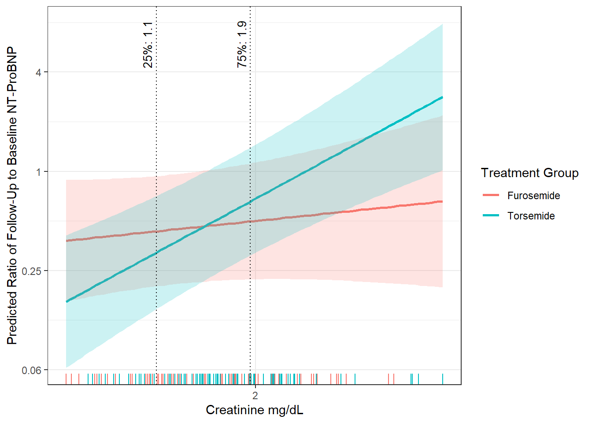
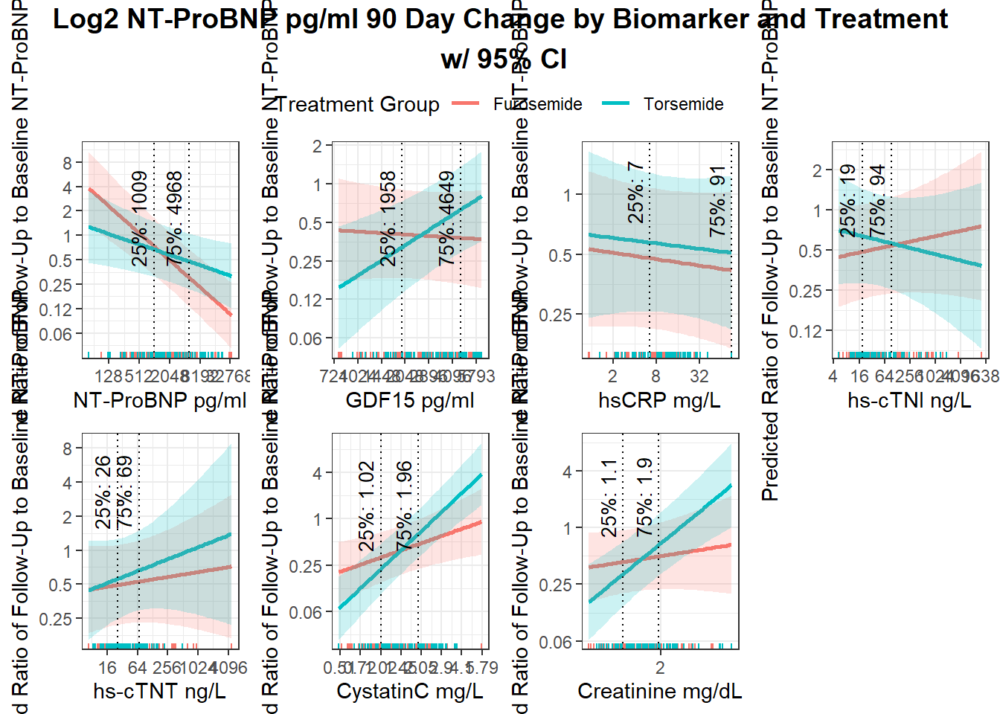
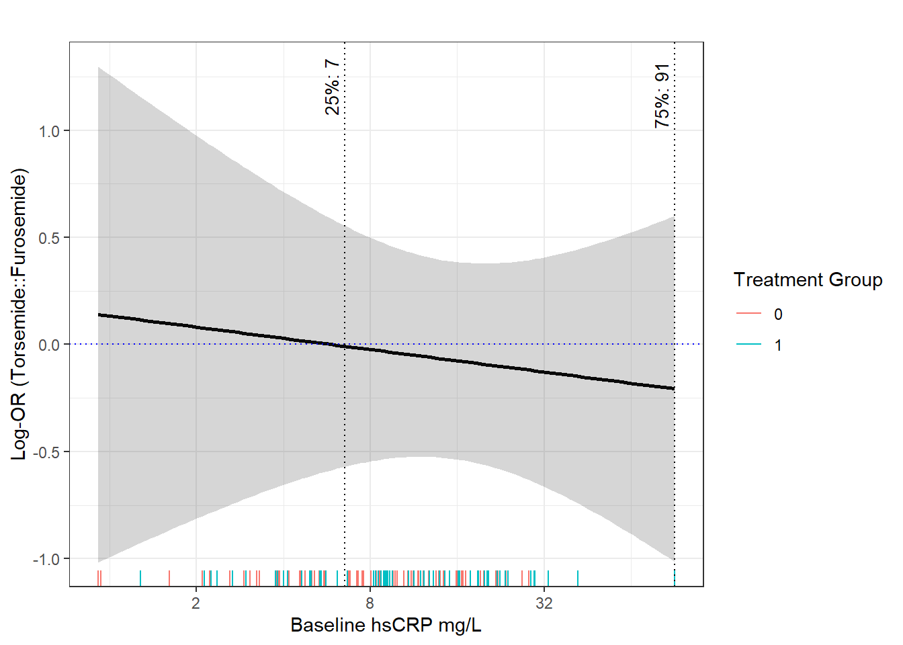
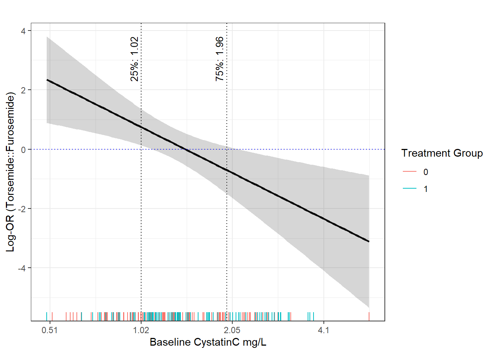
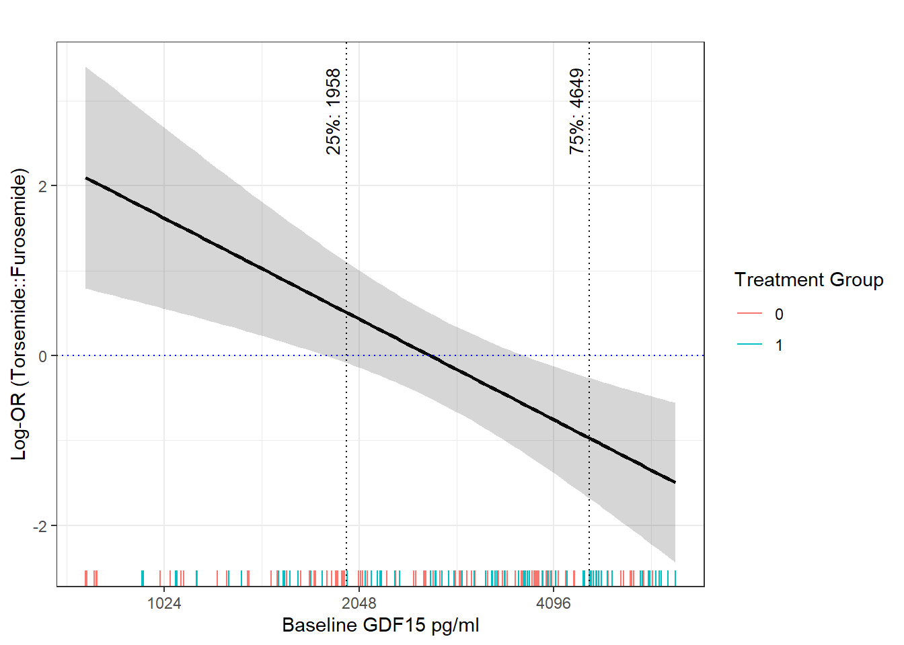
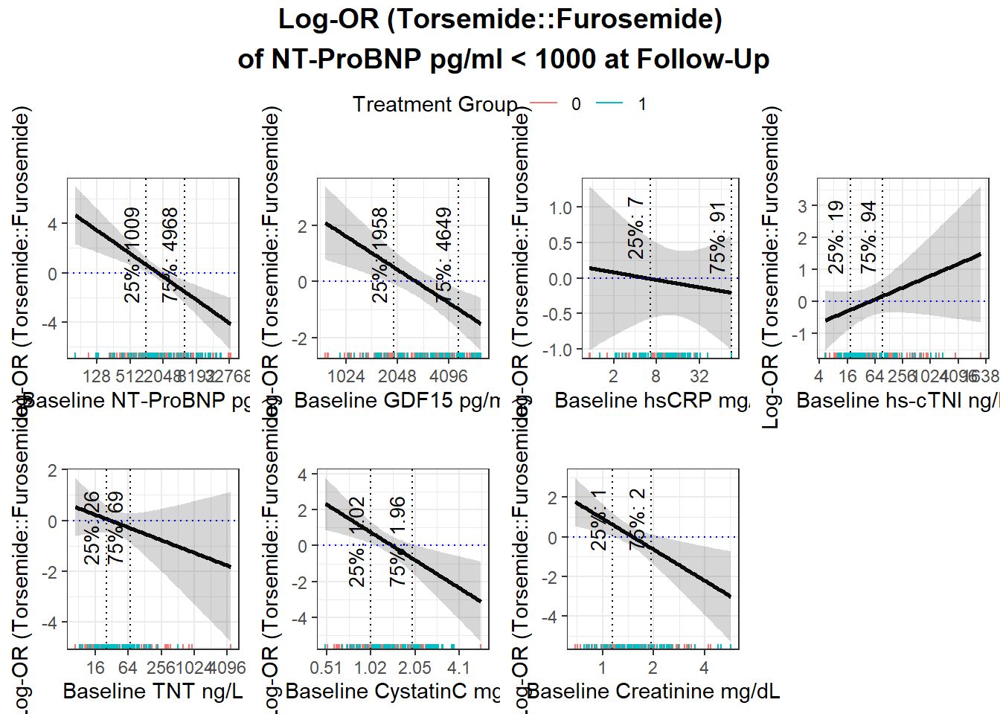
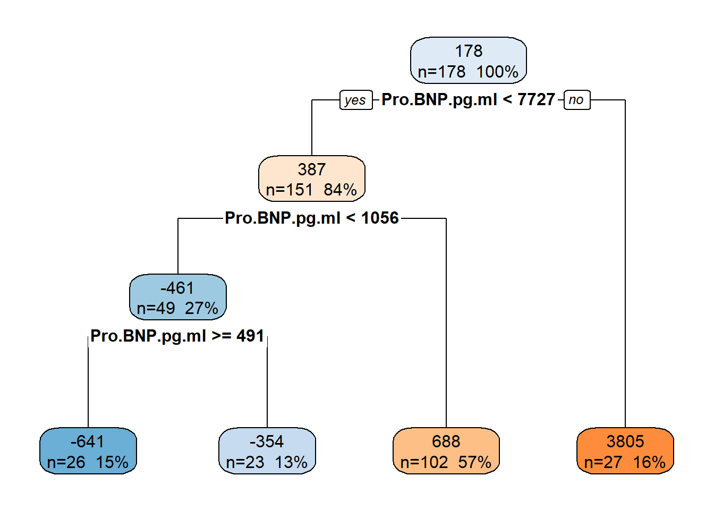
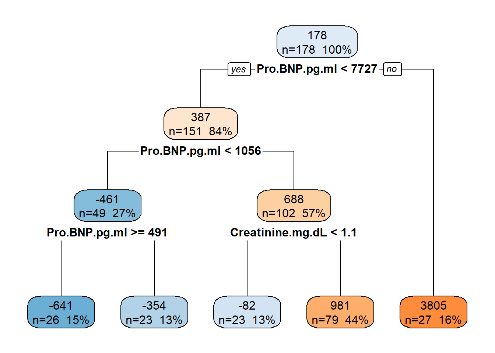

# Libraries
library(ggpubr)
library(gridExtra)
library(tidyverse)
library(glmnet)
library(ggplot2)
library(survey)
library(glinternet)
library(GGally)
library(corrplot)
library(partykit)
library(boot)
library(modelsummary)
library(ggpubr)
library(htetree)
library(rpart)
library(rpart.plot)
library(gt)
library(gtsummary)
library(Hmisc)
load("Data/dfw_and_ipw_explanatory_Lee.RData")
# Combine treatment-specific data frames
df_explanatory_IPWs = rbind(df_trtFurosemide, df_trtTorsemide)
df_explanatory_IPWs = as.data.frame(df_explanatory_IPWs)
rm(list = setdiff(ls(),"df_explanatory_IPWs"))
df_explanatory_IPWs <- df_explanatory_IPWs %>%
mutate(log2CCRP.mg.L = ifelse(log2CCRP.mg.L < min(log2CCRP.mg.L[is.finite(log2CCRP.mg.L)]), min(log2CCRP.mg.L[is.finite(log2CCRP.mg.L)]), log2CCRP.mg.L),
age = as.numeric(age))
df_explanatory_IPWs <- df_explanatory_IPWs %>%
mutate(followup_proBNP_under1000 = ifelse(Pro.BNP.pg.ml + proBNP_change < 1000, 1, 0))
# Create data frame with only the randomized cohort
df_explanatory_IPWs_rct <- df_explanatory_IPWs %>% filter(randomized_study_binary == 1) TRANSFORM-HF Biomarkers Analysis
Linear and Logistic Regression and CART Analysis
Regression Models
Read-In Data and Libraries
EDA
# proportion of patients with NT-proBNP < 1000 at follow up by treatment
table(df_explanatory_IPWs$treatment_label,df_explanatory_IPWs$followup_proBNP_under1000)
0 1
Furosemide 59 47
Torsemide 44 34prop_table <- df_explanatory_IPWs %>%
group_by(treatment_label) %>%
summarise(
# Unweighted counts and proportions
N_unweighted = n(),
n_under1000 = sum(followup_proBNP_under1000),
prop_unweighted = mean(followup_proBNP_under1000),
# Weighted counts and proportions
N_weighted = sum(combined_ipw),
n_weighted_under1000 = sum(combined_ipw * followup_proBNP_under1000),
prop_weighted = wtd.mean(followup_proBNP_under1000,
weights = combined_ipw),
.groups = "drop"
)
prop_table# A tibble: 2 × 7
treatment_label N_unweighted n_under1000 prop_unweighted N_weighted
<fct> <int> <dbl> <dbl> <dbl>
1 Furosemide 106 47 0.443 261.
2 Torsemide 78 34 0.436 197.
# ℹ 2 more variables: n_weighted_under1000 <dbl>, prop_weighted <dbl>Linear (Weighted) Regression Models
Biomarker Specific Models
df_explanatory_IPWs$sex <- as.factor(df_explanatory_IPWs$sex)
df_explanatory_IPWs$race <- as.factor(df_explanatory_IPWs$race)
df_explanatory_IPWs$treatment_group <- as.factor(df_explanatory_IPWs$treatment_group)Log2 NT-ProBNP
single_proBNP <- lm(log2proBNP_change ~ race + sex + age +
log2Pro.BNP.pg.ml + log2Pro.BNP.pg.ml*treatment_group,
weights = combined_ipw,
data = df_explanatory_IPWs)
m1 = summary(single_proBNP)
m1
Call:
lm(formula = log2proBNP_change ~ race + sex + age + log2Pro.BNP.pg.ml +
log2Pro.BNP.pg.ml * treatment_group, data = df_explanatory_IPWs,
weights = combined_ipw)
Weighted Residuals:
Min 1Q Median 3Q Max
-7.2188 -1.3724 0.2858 1.6930 6.3587
Coefficients:
Estimate Std. Error t value Pr(>|t|)
(Intercept) 3.173814 1.260391 2.518 0.01270 *
raceBlack 0.204091 0.560344 0.364 0.71613
raceCaucasian -0.011088 0.549434 -0.020 0.98392
raceOther 0.298596 0.595992 0.501 0.61700
sexMale 0.084416 0.260474 0.324 0.74626
age 0.030136 0.009701 3.107 0.00221 **
log2Pro.BNP.pg.ml -0.552638 0.091160 -6.062 8.04e-09 ***
treatment_group1 -3.505854 1.428230 -2.455 0.01508 *
log2Pro.BNP.pg.ml:treatment_group1 0.339500 0.127381 2.665 0.00841 **
---
Signif. codes: 0 '***' 0.001 '**' 0.01 '*' 0.05 '.' 0.1 ' ' 1
Residual standard error: 2.527 on 175 degrees of freedom
Multiple R-squared: 0.2149, Adjusted R-squared: 0.179
F-statistic: 5.986 on 8 and 175 DF, p-value: 8.641e-07# Create a sequence for the explanatory biomarker
new_log2proBNP <- seq(min(df_explanatory_IPWs$log2Pro.BNP.pg.ml),
max(df_explanatory_IPWs$log2Pro.BNP.pg.ml),
length.out = 100)
# Fix other variables to their mean (or reference level for factors)
covariates <- c("race", "sex", "age")
mean_values <- as.data.frame(
lapply(df_explanatory_IPWs[covariates], function(x) {
if (is.numeric(x)) {
mean(x, na.rm = TRUE)
} else {
factor(levels(as.factor(x))[1], levels = levels(as.factor(x))) # reference level
}
})
)
# Expand grid
new_data <- expand.grid(
log2Pro.BNP.pg.ml = new_log2proBNP,
treatment_group = factor(c(0, 1), levels = levels(df_explanatory_IPWs$treatment_group))
)
# Repeat mean_values for each row
new_data <- cbind(new_data, mean_values[rep(1, nrow(new_data)), ])
# Predict with confidence intervals
pred <- predict(single_proBNP, newdata = new_data, interval = "confidence")
# Combine predictions
plot_data <- cbind(new_data, pred)
# Get the 25th and 75th percentiles from pred for the model
qprobnp = quantile(df_explanatory_IPWs$Pro.BNP.pg.ml, probs = c(0.25,0.75))
# get 95% CI
set.seed(100)
quantile_fn = function(data, indices) {
return(quantile(data[indices], probs = c(0.25, 0.75), type = 7))
}
boot_results = boot(data = df_explanatory_IPWs$Pro.BNP.pg.ml, statistic = quantile_fn, R = 1000)
# Calculate 95% confidence intervals for each quantile
ci_25 <- boot.ci(boot_results, type = "perc", index = 1)
ci_75 <- boot.ci(boot_results, type = "perc", index = 2)
# create newdata:
nd = data.frame("log2Pro.BNP.pg.ml" = quantile(df_explanatory_IPWs$log2Pro.BNP.pg.ml, probs = c(0.25,0.25, 0.75, 0.75)),
"treatment_group" = factor(c(0, 1), levels = levels(df_explanatory_IPWs$treatment_group)))
# Repeat mean_values for each row
nd = cbind(nd, mean_values[rep(1, nrow(nd)), ])
predbnp = predict(single_proBNP, newdata = nd, interval = "confidence", level = 0.95)Table 2 Info NT-ProBNP
# turn the above into a small dataframe
cat("\nPercentile Information for main biomarker in model (ProBNP):\n")
Percentile Information for main biomarker in model (ProBNP):qprobnp 25% 75%
1008.75 4968.25 cat("\nBootstrapped CI for 25th Percentile of main biomarker in model (ProBNP):\n")
Bootstrapped CI for 25th Percentile of main biomarker in model (ProBNP):ci_25$percent[4:5][1] 747.349 1231.841cat("\nBootstrapped CI for 75th Percentile of main biomarker in model (ProBNP):\n")
Bootstrapped CI for 75th Percentile of main biomarker in model (ProBNP):ci_75$percent[4:5][1] 3682 6754cat("\nPredicted Change in NT-ProBNP Change at Given Percentile:\n")
Predicted Change in NT-ProBNP Change at Given Percentile:df2 = data.frame("fit" = round(2^(nd$log2Pro.BNP.pg.ml + predbnp[,"fit"]) - 2^(nd$log2Pro.BNP.pg.ml) ,2),
"lower-CI" = round(2^(nd$log2Pro.BNP.pg.ml + predbnp[,"lwr"]) - 2^(nd$log2Pro.BNP.pg.ml) ,2),
"upper-CI" = round(2^(nd$log2Pro.BNP.pg.ml + predbnp[,"upr"]) - 2^(nd$log2Pro.BNP.pg.ml) ,2))
rownames(df2) = c("Furosemide (0) at 25%", "Torsemide (1) at 25%",
"Furosemide (0) at 75%", "Torsemide (1) at 75%")
df2 fit lower.CI upper.CI
Furosemide (0) at 25% -269.72 -679.20 648.57
Torsemide (1) at 25% -327.86 -698.10 483.66
Furosemide (0) at 75% -3459.06 -4295.19 -1582.21
Torsemide (1) at 75% -2580.12 -3877.30 261.31Plot using the log2 scaling on y-axis
# plot for the log2 scale transformation
logplot_data = plot_data
logplot_data$fit = round((new_data$log2Pro.BNP.pg.ml + logplot_data[,"fit"]) - (new_data$log2Pro.BNP.pg.ml) ,2)
logplot_data$lwr = round((new_data$log2Pro.BNP.pg.ml + logplot_data[,"lwr"]) - (new_data$log2Pro.BNP.pg.ml) ,2)
logplot_data$upr = round((new_data$log2Pro.BNP.pg.ml + logplot_data[,"upr"]) - (new_data$log2Pro.BNP.pg.ml) ,2)
x_breaks <- seq(floor(min(logplot_data$log2Pro.BNP.pg.ml)), ceiling(max(logplot_data$log2Pro.BNP.pg.ml)), by = 2)
log2pro = ggplot(logplot_data, aes(x = log2Pro.BNP.pg.ml, y = fit,
color = treatment_group,
fill = treatment_group)) +
geom_line(size = 1) +
geom_rug(data=df_explanatory_IPWs,aes(x=log2Pro.BNP.pg.ml, color = treatment_group), inherit.aes=FALSE)+
geom_ribbon(aes(ymin = lwr,
ymax = upr),
alpha = 0.2,
color = NA) +
scale_color_discrete(labels = c("Furosemide", "Torsemide")) +
guides(fill = "none") +
labs(
x = "NT-ProBNP pg/ml",
y = "Predicted Ratio of Follow-Up to Baseline NT-ProBNP",
color = "Treatment Group",
) +
scale_x_continuous(
name = "NT-ProBNP pg/ml",
breaks = x_breaks,
labels = function(x) round(2^x, 0)
)+
scale_y_continuous(
breaks = seq(-4,4),
labels = function(x) round(2^x, 2)
)+
geom_vline(xintercept = log2(qprobnp[1]), color = "black", linetype = "dotted") +
geom_vline(xintercept = log2(qprobnp[2]), color = "black", linetype = "dotted") +
annotate("text", x = log2(qprobnp[1]), y = Inf, label = paste0("25%: ", round(qprobnp[1], 0)),
vjust = -0.5, hjust = 1.3, angle = 90, color = "black", size = 3.5) +
annotate("text", x = log2(qprobnp[2]), y = Inf, label = paste0("75%: ", round(qprobnp[2],0)),
vjust = -0.5, hjust = 1.3, angle = 90, color = "black", size = 3.5) + theme_bw()
log2pro
ggsave(plot = log2pro, "Plots/fig2_logproBNP.jpg", width = 13, height = 7, units = "in")Log2 CCRP
single_ccrp <- lm(log2proBNP_change ~ race + sex + age +
log2Pro.BNP.pg.ml + log2CCRP.mg.L*treatment_group +
log2Pro.BNP.pg.ml*log2CCRP.mg.L,
weights = combined_ipw,
data = df_explanatory_IPWs)
m1 = summary(single_ccrp)
m1
Call:
lm(formula = log2proBNP_change ~ race + sex + age + log2Pro.BNP.pg.ml +
log2CCRP.mg.L * treatment_group + log2Pro.BNP.pg.ml * log2CCRP.mg.L,
data = df_explanatory_IPWs, weights = combined_ipw)
Weighted Residuals:
Min 1Q Median 3Q Max
-7.2585 -1.2869 0.2085 1.5461 6.4594
Coefficients:
Estimate Std. Error t value Pr(>|t|)
(Intercept) -0.502000 1.995726 -0.252 0.80170
raceBlack 0.189452 0.575134 0.329 0.74225
raceCaucasian 0.020929 0.566032 0.037 0.97055
raceOther 0.361448 0.612271 0.590 0.55573
sexMale 0.184236 0.272537 0.676 0.49994
age 0.030573 0.010012 3.054 0.00262 **
log2Pro.BNP.pg.ml -0.211913 0.159565 -1.328 0.18591
log2CCRP.mg.L 0.384251 0.393255 0.977 0.32988
treatment_group1 0.241510 0.601178 0.402 0.68838
log2CCRP.mg.L:treatment_group1 0.008125 0.137901 0.059 0.95308
log2Pro.BNP.pg.ml:log2CCRP.mg.L -0.039703 0.034518 -1.150 0.25164
---
Signif. codes: 0 '***' 0.001 '**' 0.01 '*' 0.05 '.' 0.1 ' ' 1
Residual standard error: 2.578 on 173 degrees of freedom
Multiple R-squared: 0.1919, Adjusted R-squared: 0.1452
F-statistic: 4.107 on 10 and 173 DF, p-value: 4.305e-05# Create a sequence for the explanatory biomarker
new_log2ccrp <- seq(min(df_explanatory_IPWs$log2CCRP.mg.L),
max(df_explanatory_IPWs$log2CCRP.mg.L),
length.out = 100)
# Fix other variables to their mean (or reference level for factors)
covariates <- c("race", "sex", "age", "log2Pro.BNP.pg.ml")
mean_values <- as.data.frame(
lapply(df_explanatory_IPWs[covariates], function(x) {
if (is.numeric(x)) {
mean(x, na.rm = TRUE)
} else {
factor(levels(as.factor(x))[1], levels = levels(as.factor(x))) # reference level
}
})
)
# Expand grid
new_data <- expand.grid(
log2CCRP.mg.L = new_log2ccrp,
treatment_group = factor(c(0, 1), levels = levels(df_explanatory_IPWs$treatment_group)) # adjust levels
)
# Repeat mean_values for each row
new_data <- cbind(new_data, mean_values[rep(1, nrow(new_data)), ])
# Predict with confidence intervals
pred <- predict(single_ccrp, newdata = new_data, interval = "confidence")
# Combine predictions
plot_data <- cbind(new_data, pred)
#### Table 2 Values:
qccrp = quantile(df_explanatory_IPWs$CCRP.mg.L, probs = c(0.25,0.75))
set.seed(100)
quantile_fn = function(data, indices) {
return(quantile(data[indices], probs = c(0.25, 0.75), type = 7))
}
boot_results = boot(data = df_explanatory_IPWs$CCRP.mg.L, statistic = quantile_fn, R = 1000)
# Calculate 95% confidence intervals for each quantile
ci_25 <- boot.ci(boot_results, type = "perc", index = 1)
ci_75 <- boot.ci(boot_results, type = "perc", index = 2)
# create newdata:
nd = data.frame("log2CCRP.mg.L" = quantile(df_explanatory_IPWs$log2CCRP.mg.L, probs = c(0.25,0.25, 0.75, 0.75)),
"treatment_group" = factor(c(0, 1), levels = levels(df_explanatory_IPWs$treatment_group)))
# Repeat mean_values for each row
nd = cbind(nd, mean_values[rep(1, nrow(nd)), ])
predccrp = predict(single_ccrp, newdata = nd, interval = "confidence", level = 0.95)Table 2 Info CCRP
# turn the above into a small dataframe
cat("\nPercentile Information for main biomarker in model (CCRP):\n")
Percentile Information for main biomarker in model (CCRP):qccrp 25% 75%
6.53 91.00 cat("\nBootstrapped CI for 25th Percentile of main biomarker in model (CCRP):\n")
Bootstrapped CI for 25th Percentile of main biomarker in model (CCRP):ci_25$percent[4:5][1] 5.31 8.41cat("\nBootstrapped CI for 75th Percentile of main biomarker in model (CCRP):\n")
Bootstrapped CI for 75th Percentile of main biomarker in model (CCRP):ci_75$percent[4:5][1] 28.7375 91.0000cat("\nPredicted Change in NT-ProBNP Change at Given Percentile:\n")
Predicted Change in NT-ProBNP Change at Given Percentile:df2 = data.frame("fit" =
round(2^(mean(df_explanatory_IPWs$log2Pro.BNP.pg.ml) + predccrp[,"fit"]) - 2^(mean(df_explanatory_IPWs$log2Pro.BNP.pg.ml)) ,2)
,
"lower-CI" =
round(2^(mean(df_explanatory_IPWs$log2Pro.BNP.pg.ml) + predccrp[,"lwr"]) - 2^(mean(df_explanatory_IPWs$log2Pro.BNP.pg.ml)) ,2)
,
"upper-CI" =
round(2^(mean(df_explanatory_IPWs$log2Pro.BNP.pg.ml) + predccrp[,"upr"]) - 2^(mean(df_explanatory_IPWs$log2Pro.BNP.pg.ml)) ,2))
rownames(df2) = c("Furosemide (0) at 25%", "Torsemide (1) at 25%",
"Furosemide (0) at 75%", "Torsemide (1) at 75%")
df2 fit lower.CI upper.CI
Furosemide (0) at 25% -1088.01 -1644.97 173.59
Torsemide (1) at 25% -888.18 -1549.75 590.74
Furosemide (0) at 75% -1219.16 -1735.80 61.33
Torsemide (1) at 75% -1023.11 -1650.50 509.68Plot using the log2 scaling y-axis
logplot_data = plot_data
logplot_data$fit = round((new_data$log2Pro.BNP.pg.ml + logplot_data[,"fit"]) - (new_data$log2Pro.BNP.pg.ml) ,2)
logplot_data$lwr = round((new_data$log2Pro.BNP.pg.ml + logplot_data[,"lwr"]) - (new_data$log2Pro.BNP.pg.ml) ,2)
logplot_data$upr = round((new_data$log2Pro.BNP.pg.ml + logplot_data[,"upr"]) - (new_data$log2Pro.BNP.pg.ml) ,2)
x_breaks <- seq(floor(min(plot_data$log2CCRP.mg.L)), ceiling(max(logplot_data$log2CCRP.mg.L)), by = 2)
log2ccrp = ggplot(logplot_data, aes(x = log2CCRP.mg.L, y = fit,
color = treatment_group,
fill = treatment_group)) +
geom_line(size = 1) +
geom_rug(data=df_explanatory_IPWs,
aes(x=log2CCRP.mg.L, color = treatment_group),
inherit.aes=FALSE)+
geom_ribbon(aes(ymin = lwr,
ymax = upr),
alpha = 0.2,
color = NA) +
scale_color_discrete(labels = c("Furosemide", "Torsemide")) +
guides(fill = "none") +
labs(
x = "",
y = "Predicted Ratio of Follow-Up to Baseline NT-ProBNP",
color = "Treatment Group",
) +
scale_x_continuous(
name = "hsCRP mg/L",
breaks = x_breaks,
labels = function(x) round(2^x, 1)
)+
scale_y_continuous(
labels = function(x) round(2^x, 2)
)+
geom_vline(xintercept = log2(qccrp[1]), color = "black", linetype = "dotted") +
geom_vline(xintercept = log2(qccrp[2]), color = "black", linetype = "dotted") +
annotate("text", x = log2(qccrp[1]), y = Inf, label = paste0("25%: ", round(qccrp[1], 0)),
vjust = -0.5, hjust = 1.3, angle = 90, color = "black", size = 3.5) +
annotate("text", x = log2(qccrp[2]), y = Inf, label = paste0("75%: ", round(qccrp[2],0)),
vjust = -0.5, hjust = 1.3, angle = 90, color = "black", size = 3.5)+
theme_bw()
log2ccrp
ggsave(log2ccrp, filename = "Plots/fig2_logccrp.jpg", width = 13, height = 7, units = "in")Log2 TNT
single_log2TNT <- lm(log2proBNP_change ~ race + sex + age +
log2Pro.BNP.pg.ml + log2TNT.ng.L*treatment_group +
log2Pro.BNP.pg.ml*log2TNT.ng.L,
weights = combined_ipw,
data = df_explanatory_IPWs)
summary(single_log2TNT)
Call:
lm(formula = log2proBNP_change ~ race + sex + age + log2Pro.BNP.pg.ml +
log2TNT.ng.L * treatment_group + log2Pro.BNP.pg.ml * log2TNT.ng.L,
data = df_explanatory_IPWs, weights = combined_ipw)
Weighted Residuals:
Min 1Q Median 3Q Max
-7.0474 -1.2809 0.1774 1.6543 6.9936
Coefficients:
Estimate Std. Error t value Pr(>|t|)
(Intercept) -1.244304 3.510818 -0.354 0.72346
raceBlack 0.160500 0.572534 0.280 0.77956
raceCaucasian -0.033154 0.563848 -0.059 0.95318
raceOther 0.354815 0.610113 0.582 0.56162
sexMale 0.048032 0.271797 0.177 0.85994
age 0.029091 0.009985 2.914 0.00404 **
log2Pro.BNP.pg.ml -0.176347 0.296291 -0.595 0.55250
log2TNT.ng.L 0.533626 0.623825 0.855 0.39351
treatment_group1 -0.303389 1.153023 -0.263 0.79277
log2TNT.ng.L:treatment_group1 0.103047 0.208183 0.495 0.62124
log2Pro.BNP.pg.ml:log2TNT.ng.L -0.041850 0.052410 -0.799 0.42566
---
Signif. codes: 0 '***' 0.001 '**' 0.01 '*' 0.05 '.' 0.1 ' ' 1
Residual standard error: 2.58 on 173 degrees of freedom
Multiple R-squared: 0.1909, Adjusted R-squared: 0.1442
F-statistic: 4.083 on 10 and 173 DF, p-value: 4.671e-05# Create a sequence for the explanatory biomarker
new_log2tnt <- seq(min(df_explanatory_IPWs$log2TNT.ng.L),
max(df_explanatory_IPWs$log2TNT.ng.L),
length.out = 100)
# Fix other variables to their mean (or reference level for factors)
covariates <- c("race", "sex", "age", "log2Pro.BNP.pg.ml")
mean_values <- as.data.frame(
lapply(df_explanatory_IPWs[covariates], function(x) {
if (is.numeric(x)) {
mean(x, na.rm = TRUE)
} else {
factor(levels(as.factor(x))[1], levels = levels(as.factor(x))) # reference level
}
})
)
# Expand grid
new_data <- expand.grid(
log2TNT.ng.L = new_log2tnt,
treatment_group = factor(c(0, 1), levels = levels(df_explanatory_IPWs$treatment_group)) # adjust levels
)
# Repeat mean_values for each row
new_data <- cbind(new_data, mean_values[rep(1, nrow(new_data)), ])
# Predict with confidence intervals
pred <- predict(single_log2TNT, newdata = new_data, interval = "confidence")
# Combine predictions
plot_data <- cbind(new_data, pred)
#### Table 2 Values:
qtnt = quantile(df_explanatory_IPWs$TNT.ng.L, probs = c(0.25,0.75))
# get 95% CI
set.seed(100)
quantile_fn = function(data, indices) {
return(quantile(data[indices], probs = c(0.25, 0.75), type = 7))
}
boot_results = boot(data = df_explanatory_IPWs$TNT.ng.L, statistic = quantile_fn, R = 1000)
# Calculate 95% confidence intervals for each quantile
ci_25 <- boot.ci(boot_results, type = "perc", index = 1)
ci_75 <- boot.ci(boot_results, type = "perc", index = 2)
# create newdata:
nd = data.frame("log2TNT.ng.L" = quantile(df_explanatory_IPWs$log2TNT.ng.L, probs = c(0.25,0.25, 0.75, 0.75)),
"treatment_group" = factor(c(0, 1), levels = levels(df_explanatory_IPWs$treatment_group)))
# Repeat mean_values for each row
nd = cbind(nd, mean_values[rep(1, nrow(nd)), ])
predtnt = predict(single_log2TNT, newdata = nd, interval = "confidence", level = 0.95)Table 2 Info TNT
# turn the above into a small dataframe
cat("\nPercentile Information for main biomarker in model (TNT):\n")
Percentile Information for main biomarker in model (TNT):qtnt 25% 75%
25.6575 69.1625 cat("\nBootstrapped CI for 25th Percentile of main biomarker in model (TNT):\n")
Bootstrapped CI for 25th Percentile of main biomarker in model (TNT):ci_25$percent[4:5][1] 21.82000 28.71214cat("\nBootstrapped CI for 75th Percentile of main biomarker in model (TNT):\n")
Bootstrapped CI for 75th Percentile of main biomarker in model (TNT):ci_75$percent[4:5][1] 62.94000 81.96676cat("\nPredicted Change in NT-ProBNP Change at Given Percentile:\n")
Predicted Change in NT-ProBNP Change at Given Percentile:df2 = data.frame("fit" =
round(2^(mean(df_explanatory_IPWs$log2Pro.BNP.pg.ml) + predtnt[,"fit"]) - 2^(mean(df_explanatory_IPWs$log2Pro.BNP.pg.ml)) ,3)
,
"lower-CI" =
round(2^(mean(df_explanatory_IPWs$log2Pro.BNP.pg.ml) + predtnt[,"lwr"]) - 2^(mean(df_explanatory_IPWs$log2Pro.BNP.pg.ml)) ,3)
,
"upper-CI" =
round(2^(mean(df_explanatory_IPWs$log2Pro.BNP.pg.ml) + predtnt[,"upr"]) - 2^(mean(df_explanatory_IPWs$log2Pro.BNP.pg.ml)) ,3))
rownames(df2) = c("Furosemide (0) at 25%", "Torsemide (1) at 25%",
"Furosemide (0) at 75%", "Torsemide (1) at 75%")
df2 fit lower.CI upper.CI
Furosemide (0) at 25% -1060.293 -1630.993 227.445
Torsemide (1) at 25% -924.906 -1570.139 528.596
Furosemide (0) at 75% -984.232 -1608.416 457.063
Torsemide (1) at 75% -704.691 -1472.943 1027.515Plot using the log2 scaling y-axis
logplot_data = plot_data
logplot_data$fit = round((new_data$log2Pro.BNP.pg.ml + logplot_data[,"fit"]) - (new_data$log2Pro.BNP.pg.ml) ,2)
logplot_data$lwr = round((new_data$log2Pro.BNP.pg.ml + logplot_data[,"lwr"]) - (new_data$log2Pro.BNP.pg.ml) ,2)
logplot_data$upr = round((new_data$log2Pro.BNP.pg.ml + logplot_data[,"upr"]) - (new_data$log2Pro.BNP.pg.ml) ,2)
x_breaks = seq(floor(min(logplot_data$log2TNT.ng.L)), ceiling(max(logplot_data$log2TNT.ng.L)), by = 2)
log2tnt = ggplot(logplot_data, aes(x = log2TNT.ng.L, y = fit,
color = treatment_group,
fill = treatment_group)) +
geom_line(size = 1) +
geom_ribbon(aes(ymin = lwr,
ymax = upr),
alpha = 0.2,
color = NA) +
geom_rug(data=df_explanatory_IPWs,
aes(x=log2TNT.ng.L, color = treatment_group),
inherit.aes=FALSE)+
scale_color_discrete(labels = c("Furosemide", "Torsemide")) +
guides(fill = "none") +
labs(
x = "",
y = "Predicted Ratio of Follow-Up to Baseline NT-ProBNP",
color = "Treatment Group",
) +
scale_y_continuous(
labels = function(x) round(2^x, 2)
)+
scale_x_continuous(
name = "hs-cTNT ng/L",
breaks = x_breaks,
labels = function(x) round(2^x, 0)
)+
geom_vline(xintercept = log2(qtnt[1]), color = "black", linetype = "dotted") +
geom_vline(xintercept = log2(qtnt[2]), color = "black", linetype = "dotted") +
annotate("text", x = log2(qtnt[1]), y = Inf, label = paste0("25%: ", round(qtnt[1], 0)),
vjust = -0.5, hjust = 1.3, angle = 90, color = "black", size = 3.5) +
annotate("text", x = log2(qtnt[2]), y = Inf, label = paste0("75%: ", round(qtnt[2],0)),
vjust = -0.5, hjust = 1.3, angle = 90, color = "black", size = 3.5)+
theme_bw()
log2tnt
ggsave(log2tnt, filename = "Plots/fig2_log2tnt.jpg", width = 13, height = 7, units = "in")Log2 Troponin I
single_log2Troponin <- lm(log2proBNP_change ~ as.factor(race) + as.factor(sex) + age +
log2Pro.BNP.pg.ml + log2Troponin.I.ng.L*treatment_group +
log2Pro.BNP.pg.ml*log2Troponin.I.ng.L,
weights = combined_ipw,
data = df_explanatory_IPWs)
summary(single_log2Troponin)
Call:
lm(formula = log2proBNP_change ~ as.factor(race) + as.factor(sex) +
age + log2Pro.BNP.pg.ml + log2Troponin.I.ng.L * treatment_group +
log2Pro.BNP.pg.ml * log2Troponin.I.ng.L, data = df_explanatory_IPWs,
weights = combined_ipw)
Weighted Residuals:
Min 1Q Median 3Q Max
-7.0685 -1.3269 0.2254 1.7713 6.8273
Coefficients:
Estimate Std. Error t value Pr(>|t|)
(Intercept) -1.373220 2.411844 -0.569 0.5698
as.factor(race)Black 0.128325 0.574721 0.223 0.8236
as.factor(race)Caucasian -0.069728 0.564551 -0.124 0.9018
as.factor(race)Other 0.331445 0.613714 0.540 0.5898
as.factor(sex)Male 0.059780 0.270562 0.221 0.8254
age 0.031701 0.009944 3.188 0.0017 **
log2Pro.BNP.pg.ml -0.176590 0.194711 -0.907 0.3657
log2Troponin.I.ng.L 0.496121 0.392848 1.263 0.2083
treatment_group1 1.020901 0.805082 1.268 0.2065
log2Troponin.I.ng.L:treatment_group1 -0.147104 0.141860 -1.037 0.3012
log2Pro.BNP.pg.ml:log2Troponin.I.ng.L -0.038825 0.033438 -1.161 0.2472
---
Signif. codes: 0 '***' 0.001 '**' 0.01 '*' 0.05 '.' 0.1 ' ' 1
Residual standard error: 2.578 on 173 degrees of freedom
Multiple R-squared: 0.1921, Adjusted R-squared: 0.1454
F-statistic: 4.114 on 10 and 173 DF, p-value: 4.213e-05# Create a sequence for the explanatory biomarker
new_log2troponinI <- seq(min(df_explanatory_IPWs$log2Troponin.I.ng.L),
max(df_explanatory_IPWs$log2Troponin.I.ng.L),
length.out = 100)
# Fix other variables to their mean (or reference level for factors)
covariates <- c("race", "sex", "age", "log2Pro.BNP.pg.ml")
mean_values <- as.data.frame(
lapply(df_explanatory_IPWs[covariates], function(x) {
if (is.numeric(x)) {
mean(x, na.rm = TRUE)
} else {
factor(levels(as.factor(x))[1], levels = levels(as.factor(x))) # reference level
}
})
)
# Expand grid for both levels of var3
new_data <- expand.grid(
log2Troponin.I.ng.L = new_log2troponinI,
treatment_group = factor(c(0, 1), levels = levels(df_explanatory_IPWs$treatment_group)) # adjust levels
)
# Repeat mean_values for each row
new_data <- cbind(new_data, mean_values[rep(1, nrow(new_data)), ])
# Predict with confidence intervals
pred <- predict(single_log2Troponin, newdata = new_data, interval = "confidence")
# Combine predictions
plot_data <- cbind(new_data, pred)
#### Table 2 Values:
library(boot)
# Get the 25th and 75th percentiles from pred for the model
qtropi = quantile(df_explanatory_IPWs$Troponin.I.ng.L, probs = c(0.25,0.75))
# get 95% CI
set.seed(100)
quantile_fn = function(data, indices) {
return(quantile(data[indices], probs = c(0.25, 0.75), type = 7))
}
boot_results = boot(data = df_explanatory_IPWs$Troponin.I.ng.L, statistic = quantile_fn, R = 1000)
# Calculate 95% confidence intervals for each quantile
ci_25 <- boot.ci(boot_results, type = "perc", index = 1)
ci_75 <- boot.ci(boot_results, type = "perc", index = 2)
# ci_25
# ci_75
# create newdata:
nd = data.frame("log2Troponin.I.ng.L" = quantile(df_explanatory_IPWs$log2Troponin.I.ng.L, probs = c(0.25,0.25, 0.75, 0.75)),
"treatment_group" = factor(c(0, 1), levels = levels(df_explanatory_IPWs$treatment_group)))
# Repeat mean_values for each row
nd = cbind(nd, mean_values[rep(1, nrow(nd)), ])
# nd
predtropi = predict(single_log2Troponin, newdata = nd, interval = "confidence", level = 0.95)Table 2 Info Troponin I
# turn the above into a small dataframe
cat("\nPercentile Information for main biomarker in model (Troponin I):\n")
Percentile Information for main biomarker in model (Troponin I):qtropi 25% 75%
18.825 94.425 cat("\nBootstrapped CI for 25th Percentile of main biomarker in model (Troponin I):\n")
Bootstrapped CI for 25th Percentile of main biomarker in model (Troponin I):ci_25$percent[4:5][1] 16.65127 21.42436cat("\nBootstrapped CI for 75th Percentile of main biomarker in model (Troponin I):\n")
Bootstrapped CI for 75th Percentile of main biomarker in model (Troponin I):ci_75$percent[4:5][1] 62.500 125.825cat("\nPredicted Change in NT-ProBNP Change at Given Percentile:\n")
Predicted Change in NT-ProBNP Change at Given Percentile:df2 = data.frame("fit" =
round(2^(mean(df_explanatory_IPWs$log2Pro.BNP.pg.ml) + predtropi[,"fit"]) - 2^(mean(df_explanatory_IPWs$log2Pro.BNP.pg.ml)) ,2)
,
"lower-CI" =
round(2^(mean(df_explanatory_IPWs$log2Pro.BNP.pg.ml) + predtropi[,"lwr"]) - 2^(mean(df_explanatory_IPWs$log2Pro.BNP.pg.ml)) ,2)
,
"upper-CI" =
round(2^(mean(df_explanatory_IPWs$log2Pro.BNP.pg.ml) + predtropi[,"upr"]) - 2^(mean(df_explanatory_IPWs$log2Pro.BNP.pg.ml)) ,2))
rownames(df2) = c("Furosemide (0) at 25%", "Torsemide (1) at 25%",
"Furosemide (0) at 75%", "Torsemide (1) at 75%")
df2 fit lower.CI upper.CI
Furosemide (0) at 25% -1072.71 -1639.00 212.25
Torsemide (1) at 25% -751.05 -1499.03 951.35
Furosemide (0) at 75% -955.42 -1593.77 512.08
Torsemide (1) at 75% -910.60 -1556.57 524.66Plot using the log2 scaling y-axis
logplot_data = plot_data
logplot_data$fit = round((new_data$log2Pro.BNP.pg.ml + logplot_data[,"fit"]) - (new_data$log2Pro.BNP.pg.ml) ,2)
logplot_data$lwr = round((new_data$log2Pro.BNP.pg.ml + logplot_data[,"lwr"]) - (new_data$log2Pro.BNP.pg.ml) ,2)
logplot_data$upr = round((new_data$log2Pro.BNP.pg.ml + logplot_data[,"upr"]) - (new_data$log2Pro.BNP.pg.ml) ,2)
x_breaks <- seq(floor(min(logplot_data$log2Troponin.I.ng.L)), ceiling(max(logplot_data$log2Troponin.I.ng.L)), by = 2)
log2tropI = ggplot(logplot_data, aes(x = log2Troponin.I.ng.L, y = fit,
color = treatment_group,
fill = treatment_group)) +
geom_line(size = 1) +
geom_ribbon(aes(ymin = lwr,
ymax = upr),
alpha = 0.2,
color = NA) +
geom_rug(data=df_explanatory_IPWs,
aes(x=log2Troponin.I.ng.L, color = treatment_group),
inherit.aes=FALSE)+
scale_color_discrete(labels = c("Furosemide", "Torsemide")) +
guides(fill = "none") +
labs(
x = "",
y = "Predicted Ratio of Follow-Up to Baseline NT-ProBNP",
color = "Treatment Group",
) +
scale_y_continuous(
labels = function(x) round(2^x, 2)
)+
scale_x_continuous(
name = "hs-cTNI ng/L",
breaks = x_breaks,
labels = function(x) round(2^x, 0)
)+
geom_vline(xintercept = log2(qtropi[1]), color = "black", linetype = "dotted") +
geom_vline(xintercept = log2(qtropi[2]), color = "black", linetype = "dotted") +
annotate("text", x = log2(qtropi[1]), y = Inf, label = paste0("25%: ", round(qtropi[1], 0)),
vjust = -0.5, hjust = 1.3, angle = 90, color = "black", size = 3.5) +
annotate("text", x = log2(qtropi[2]), y = Inf, label = paste0("75%: ", round(qtropi[2],0)),
vjust = -0.5, hjust = 1.3, angle = 90, color = "black", size = 3.5)+ theme_bw()
log2tropI
ggsave(log2tropI, filename = "Plots/fig2_logtropi.jpg", width = 13, height = 7, units = "in")Log2 Creatinine
single_log2Creatinine <- lm(log2proBNP_change ~ as.factor(race) + as.factor(sex) + age +
log2Pro.BNP.pg.ml + log2Creatinine.mg.dL*treatment_group +
log2Pro.BNP.pg.ml*log2Creatinine.mg.dL,
weights = combined_ipw,
data = df_explanatory_IPWs)
summary(single_log2Creatinine)
Call:
lm(formula = log2proBNP_change ~ as.factor(race) + as.factor(sex) +
age + log2Pro.BNP.pg.ml + log2Creatinine.mg.dL * treatment_group +
log2Pro.BNP.pg.ml * log2Creatinine.mg.dL, data = df_explanatory_IPWs,
weights = combined_ipw)
Weighted Residuals:
Min 1Q Median 3Q Max
-7.1929 -1.2243 0.1235 1.4974 8.1128
Coefficients:
Estimate Std. Error t value Pr(>|t|)
(Intercept) 3.127306 1.445535 2.163 0.03188
as.factor(race)Black 0.189325 0.541511 0.350 0.72705
as.factor(race)Caucasian 0.340300 0.535308 0.636 0.52581
as.factor(race)Other 0.612553 0.578729 1.058 0.29133
as.factor(sex)Male -0.131154 0.260117 -0.504 0.61475
age 0.027109 0.009713 2.791 0.00585
log2Pro.BNP.pg.ml -0.552101 0.114310 -4.830 2.99e-06
log2Creatinine.mg.dL -0.758251 1.361383 -0.557 0.57827
treatment_group1 -0.643457 0.349224 -1.843 0.06711
log2Creatinine.mg.dL:treatment_group1 1.091790 0.402154 2.715 0.00730
log2Pro.BNP.pg.ml:log2Creatinine.mg.dL 0.092319 0.111539 0.828 0.40899
(Intercept) *
as.factor(race)Black
as.factor(race)Caucasian
as.factor(race)Other
as.factor(sex)Male
age **
log2Pro.BNP.pg.ml ***
log2Creatinine.mg.dL
treatment_group1 .
log2Creatinine.mg.dL:treatment_group1 **
log2Pro.BNP.pg.ml:log2Creatinine.mg.dL
---
Signif. codes: 0 '***' 0.001 '**' 0.01 '*' 0.05 '.' 0.1 ' ' 1
Residual standard error: 2.432 on 173 degrees of freedom
Multiple R-squared: 0.2808, Adjusted R-squared: 0.2392
F-statistic: 6.754 on 10 and 173 DF, p-value: 7.607e-09# Create a sequence for the explanatory biomarker
new_log2creatinine <- seq(min(df_explanatory_IPWs$log2Creatinine.mg.dL),
max(df_explanatory_IPWs$log2Creatinine.mg.dL),
length.out = 100)
# Fix other variables to their mean (or reference level for factors)
covariates <- c("race", "sex", "age", "log2Pro.BNP.pg.ml")
mean_values <- as.data.frame(
lapply(df_explanatory_IPWs[covariates], function(x) {
if (is.numeric(x)) {
mean(x, na.rm = TRUE)
} else {
factor(levels(as.factor(x))[1], levels = levels(as.factor(x))) # reference level
}
})
)
# Expand grid for both levels of var3
new_data <- expand.grid(
log2Creatinine.mg.dL = new_log2creatinine,
treatment_group = factor(c(0, 1), levels = levels(df_explanatory_IPWs$treatment_group)) # adjust levels
)
# Repeat mean_values for each row
new_data <- cbind(new_data, mean_values[rep(1, nrow(new_data)), ])
# Predict with confidence intervals
pred <- predict(single_log2Creatinine, newdata = new_data, interval = "confidence")
# Combine predictions
plot_data <- cbind(new_data, pred)
#### Table 2 Values:
# Get the 25th and 75th percentiles from pred for the model
qcreat = quantile(df_explanatory_IPWs$Creatinine.mg.dL, probs = c(0.25,0.75))
# get 95% CI
set.seed(100)
quantile_fn = function(data, indices) {
return(quantile(data[indices], probs = c(0.25, 0.75), type = 7))
}
boot_results = boot(data = df_explanatory_IPWs$Creatinine.mg.dL, statistic = quantile_fn, R = 1000)
# Calculate 95% confidence intervals for each quantile
ci_25 <- boot.ci(boot_results, type = "perc", index = 1)
ci_75 <- boot.ci(boot_results, type = "perc", index = 2)
# create newdata:
nd = data.frame("log2Creatinine.mg.dL" = quantile(df_explanatory_IPWs$log2Creatinine.mg.dL, probs = c(0.25,0.25, 0.75, 0.75)),
"treatment_group" = factor(c(0, 1), levels = levels(df_explanatory_IPWs$treatment_group)))
# Repeat mean_values for each row
nd = cbind(nd, mean_values[rep(1, nrow(nd)), ])
predcreat = predict(single_log2Creatinine, newdata = nd, interval = "confidence", level = 0.95)Table 2 Info Creatinine
# turn the above into a small dataframe
cat("\nPercentile Information for main biomarker in model (Creatinine):\n")
Percentile Information for main biomarker in model (Creatinine):qcreat 25% 75%
1.1450 1.9425 cat("\nBootstrapped CI for 25th Percentile of main biomarker in model (Creatinine):\n")
Bootstrapped CI for 25th Percentile of main biomarker in model (Creatinine):ci_25$percent[4:5][1] 1.1100 1.2475cat("\nBootstrapped CI for 75th Percentile of main biomarker in model (Creatinine):\n")
Bootstrapped CI for 75th Percentile of main biomarker in model (Creatinine):ci_75$percent[4:5][1] 1.7725 2.2025cat("\nPredicted Change in NT-ProBNP Change at Given Percentile:\n")
Predicted Change in NT-ProBNP Change at Given Percentile:df2 = data.frame("fit" =
round(2^(mean(df_explanatory_IPWs$log2Pro.BNP.pg.ml) + predcreat[,"fit"]) - 2^(mean(df_explanatory_IPWs$log2Pro.BNP.pg.ml)) ,2)
,
"lower-CI" =
round(2^(mean(df_explanatory_IPWs$log2Pro.BNP.pg.ml) + predcreat[,"lwr"]) - 2^(mean(df_explanatory_IPWs$log2Pro.BNP.pg.ml)) ,2)
,
"upper-CI" =
round(2^(mean(df_explanatory_IPWs$log2Pro.BNP.pg.ml) + predcreat[,"upr"]) - 2^(mean(df_explanatory_IPWs$log2Pro.BNP.pg.ml)) ,2))
rownames(df2) = c("Furosemide (0) at 25%", "Torsemide (1) at 25%",
"Furosemide (0) at 75%", "Torsemide (1) at 75%")
df2 fit lower.CI upper.CI
Furosemide (0) at 25% -1182.45 -1666.89 -137.00
Torsemide (1) at 25% -1415.23 -1781.25 -608.49
Furosemide (0) at 75% -1049.63 -1625.00 245.06
Torsemide (1) at 75% -716.49 -1440.88 822.26Plot using the log2 scaling y-axis
logplot_data = plot_data
logplot_data$fit = round((new_data$log2Pro.BNP.pg.ml + logplot_data[,"fit"]) - (new_data$log2Pro.BNP.pg.ml) ,2)
logplot_data$lwr = round((new_data$log2Pro.BNP.pg.ml + logplot_data[,"lwr"]) - (new_data$log2Pro.BNP.pg.ml) ,2)
logplot_data$upr = round((new_data$log2Pro.BNP.pg.ml + logplot_data[,"upr"]) - (new_data$log2Pro.BNP.pg.ml) ,2)
x_breaks <- seq(floor(min(logplot_data$log2Creatinine.mg.dL)), ceiling(max(logplot_data$log2Creatinine.mg.dL)), by = 2)
log2Creat = ggplot(logplot_data, aes(x = log2Creatinine.mg.dL, y = fit,
color = treatment_group,
fill = treatment_group)) +
geom_line(size = 1) +
geom_rug(data=df_explanatory_IPWs,aes(x=log2Creatinine.mg.dL, color = treatment_group), inherit.aes=FALSE)+
geom_ribbon(aes(ymin = lwr,
ymax = upr),
alpha = 0.2,
color = NA) +
scale_color_discrete(labels = c("Furosemide", "Torsemide")) +
guides(fill = "none") +
labs(
x = "",
y = "Predicted Ratio of Follow-Up to Baseline NT-ProBNP",
color = "Treatment Group",
) +
scale_y_continuous(
labels = function(x) round(2^x, 2)
)+
scale_x_continuous(
name = "Creatinine mg/dL",
breaks = x_breaks,
labels = function(x) round(2^x, 2)
)+
geom_vline(xintercept = log2(qcreat[1]), color = "black", linetype = "dotted") +
# Plot the 75% line for baseline GDF15 and the CI around it.
geom_vline(xintercept = log2(qcreat[2]), color = "black", linetype = "dotted") +
annotate("text", x = log2(qcreat[1]), y = Inf, label = paste0("25%: ", round(qcreat[1], 1)),
vjust = -0.5, hjust = 1.3, angle = 90, color = "black", size = 3.5) +
annotate("text", x = log2(qcreat[2]), y = Inf, label = paste0("75%: ", round(qcreat[2],1)),
vjust = -0.5, hjust = 1.3, angle = 90, color = "black", size = 3.5)+theme_bw()
log2Creat
ggsave(log2Creat, filename = "Plots/fig2_logcreat.jpg", width = 13, height = 7, units = "in")Log2 Cystatin C
single_log2CystatinC <- lm(log2proBNP_change ~ as.factor(race) + as.factor(sex) + age +
log2Pro.BNP.pg.ml + log2Cystatin.C.ng.mL*treatment_group +
log2Pro.BNP.pg.ml*log2Cystatin.C.ng.mL,
weights = combined_ipw,
data = df_explanatory_IPWs)
summary(single_log2CystatinC)
Call:
lm(formula = log2proBNP_change ~ as.factor(race) + as.factor(sex) +
age + log2Pro.BNP.pg.ml + log2Cystatin.C.ng.mL * treatment_group +
log2Pro.BNP.pg.ml * log2Cystatin.C.ng.mL, data = df_explanatory_IPWs,
weights = combined_ipw)
Weighted Residuals:
Min 1Q Median 3Q Max
-6.8005 -1.3607 0.1446 1.4177 6.1891
Coefficients:
Estimate Std. Error t value Pr(>|t|)
(Intercept) 2.387091 11.929946 0.200 0.84164
as.factor(race)Black 0.452093 0.513060 0.881 0.37945
as.factor(race)Caucasian 0.571173 0.508376 1.124 0.26277
as.factor(race)Other 0.682892 0.545993 1.251 0.21272
as.factor(sex)Male 0.051205 0.238378 0.215 0.83017
age 0.016690 0.009347 1.786 0.07592
log2Pro.BNP.pg.ml -1.021289 1.006713 -1.014 0.31177
log2Cystatin.C.ng.mL 0.096367 1.129879 0.085 0.93213
treatment_group1 -10.735349 3.566644 -3.010 0.00300
log2Cystatin.C.ng.mL:treatment_group1 1.023492 0.339666 3.013 0.00297
log2Pro.BNP.pg.ml:log2Cystatin.C.ng.mL 0.047127 0.094239 0.500 0.61765
(Intercept)
as.factor(race)Black
as.factor(race)Caucasian
as.factor(race)Other
as.factor(sex)Male
age .
log2Pro.BNP.pg.ml
log2Cystatin.C.ng.mL
treatment_group1 **
log2Cystatin.C.ng.mL:treatment_group1 **
log2Pro.BNP.pg.ml:log2Cystatin.C.ng.mL
---
Signif. codes: 0 '***' 0.001 '**' 0.01 '*' 0.05 '.' 0.1 ' ' 1
Residual standard error: 2.3 on 173 degrees of freedom
Multiple R-squared: 0.357, Adjusted R-squared: 0.3198
F-statistic: 9.606 on 10 and 173 DF, p-value: 1.185e-12# Create a sequence for the explanatory biomarker
new_log2cystatinC <- seq(min(df_explanatory_IPWs$log2Cystatin.C.ng.mL),
max(df_explanatory_IPWs$log2Cystatin.C.ng.mL),
length.out = 100)
# Fix other variables to their mean (or reference level for factors)
covariates <- c("race", "sex", "age", "log2Pro.BNP.pg.ml")
mean_values <- as.data.frame(
lapply(df_explanatory_IPWs[covariates], function(x) {
if (is.numeric(x)) {
mean(x, na.rm = TRUE)
} else {
factor(levels(as.factor(x))[1], levels = levels(as.factor(x))) # reference level
}
})
)
# Expand grid
new_data = expand.grid(
log2Cystatin.C.ng.mL = new_log2cystatinC,
treatment_group = factor(c(0, 1), levels = levels(df_explanatory_IPWs$treatment_group)) # adjust levels
)
# Repeat mean_values for each row
new_data = cbind(new_data, mean_values[rep(1, nrow(new_data)), ])
# Predict with confidence intervals
pred = predict(single_log2CystatinC, newdata = new_data, interval = "confidence")
# Combine predictions
plot_data = cbind(new_data, pred)
#### Table 2 Values:
# Get the 25th and 75th percentiles from pred for the model
qcyst = quantile(df_explanatory_IPWs$Cystatin.C.ng.mL, probs = c(0.25,0.75))
# get 95% CI
set.seed(100)
quantile_fn = function(data, indices) {
return(quantile(data[indices], probs = c(0.25, 0.75), type = 7))
}
boot_results = boot(data = df_explanatory_IPWs$Cystatin.C.ng.mL, statistic = quantile_fn, R = 1000)
# Calculate 95% confidence intervals for each quantile
ci_25 <- boot.ci(boot_results, type = "perc", index = 1)
ci_75 <- boot.ci(boot_results, type = "perc", index = 2)
# ci_25
# ci_75
# create newdata:
nd = data.frame("log2Cystatin.C.ng.mL" = quantile(df_explanatory_IPWs$log2Cystatin.C.ng.mL, probs = c(0.25,0.25, 0.75, 0.75)),
"treatment_group" = factor(c(0, 1), levels = levels(df_explanatory_IPWs$treatment_group)))
# Repeat mean_values for each row
nd = cbind(nd, mean_values[rep(1, nrow(nd)), ])
predcyst = predict(single_log2CystatinC, newdata = nd, interval = "confidence", level = 0.95)Table 2 Info CystatinC
# turn the above into a small dataframe
cat("\nPercentile Information for main biomarker in model (CystatinC):\n")
Percentile Information for main biomarker in model (CystatinC):qcyst 25% 75%
1024.573 1959.566 cat("\nBootstrapped CI for 25th Percentile of main biomarker in model (CystatinC):\n")
Bootstrapped CI for 25th Percentile of main biomarker in model (CystatinC):ci_25$percent[4:5][1] 961.8006 1101.1815cat("\nBootstrapped CI for 75th Percentile of main biomarker in model (CystatinC):\n")
Bootstrapped CI for 75th Percentile of main biomarker in model (CystatinC):ci_75$percent[4:5][1] 1785.545 2236.170cat("\nPredicted Change in NT-ProBNP Change at Given Percentile:\n")
Predicted Change in NT-ProBNP Change at Given Percentile:df2 = data.frame("fit" =
round(2^(mean(df_explanatory_IPWs$log2Pro.BNP.pg.ml) + predcyst[,"fit"]) - 2^(mean(df_explanatory_IPWs$log2Pro.BNP.pg.ml)) ,2)
,
"lower-CI" =
round(2^(mean(df_explanatory_IPWs$log2Pro.BNP.pg.ml) + predcyst[,"lwr"]) - 2^(mean(df_explanatory_IPWs$log2Pro.BNP.pg.ml)) ,2)
,
"upper-CI" =
round(2^(mean(df_explanatory_IPWs$log2Pro.BNP.pg.ml) + predcyst[,"upr"]) - 2^(mean(df_explanatory_IPWs$log2Pro.BNP.pg.ml)) ,2))
rownames(df2) = c("Furosemide (0) at 25%", "Torsemide (1) at 25%",
"Furosemide (0) at 75%", "Torsemide (1) at 75%")
df2 fit lower.CI upper.CI
Furosemide (0) at 25% -1427.92 -1774.58 -694.39
Torsemide (1) at 25% -1620.31 -1867.08 -1094.39
Furosemide (0) at 75% -1105.21 -1618.15 -28.96
Torsemide (1) at 75% -739.19 -1423.66 653.46Plot using the log2 scaling y-axis
logplot_data = plot_data
logplot_data$fit = round((new_data$log2Pro.BNP.pg.ml + logplot_data[,"fit"]) - (new_data$log2Pro.BNP.pg.ml) ,2)
logplot_data$lwr = round((new_data$log2Pro.BNP.pg.ml + logplot_data[,"lwr"]) - (new_data$log2Pro.BNP.pg.ml) ,2)
logplot_data$upr = round((new_data$log2Pro.BNP.pg.ml + logplot_data[,"upr"]) - (new_data$log2Pro.BNP.pg.ml) ,2)
x_breaks = seq(floor(min(logplot_data$log2Cystatin.C.ng.mL)), ceiling(max(logplot_data$log2Cystatin.C.ng.mL)), by = 0.5)
log2Cyst = ggplot(logplot_data, aes(x = log2Cystatin.C.ng.mL, y = fit,
color = treatment_group,
fill = treatment_group)) +
geom_line(size = 1) +
geom_ribbon(aes(ymin = lwr,
ymax = upr),
alpha = 0.2,
color = NA) +
geom_rug(data=df_explanatory_IPWs,
aes(x=log2Cystatin.C.ng.mL, color = treatment_group),
inherit.aes=FALSE)+
scale_color_discrete(labels = c("Furosemide", "Torsemide")) +
guides(fill = "none") +
labs(
x = "",
y = "Predicted Ratio of Follow-Up to Baseline NT-ProBNP",
color = "Treatment Group",
) +
scale_y_continuous(
labels = function(x) round(2^x, 2)
)+
scale_x_continuous(
name = "CystatinC mg/L",
breaks = x_breaks,
labels = function(x) round((2^x)/1000,2)
)+
geom_vline(xintercept = log2(qcyst[1]), color = "black", linetype = "dotted") +
geom_vline(xintercept = log2(qcyst[2]), color = "black", linetype = "dotted") +
annotate("text", x = log2(qcyst[1]), y = Inf, label = paste0("25%: ", round(qcyst[1]/1000, 2)),
vjust = -0.5, hjust = 1.3, angle = 90, color = "black", size = 3.5) +
annotate("text", x = log2(qcyst[2]), y = Inf, label = paste0("75%: ", round(qcyst[2]/1000,2)),
vjust = -0.5, hjust = 1.3, angle = 90, color = "black", size = 3.5)+theme_bw()
log2Cyst
ggsave(log2Cyst, filename = "Plots/fig2_logcyst.jpg", width = 13, height = 7, units = "in")log2GDF15
single_GDF15 <- lm(log2proBNP_change ~ as.factor(race) + as.factor(sex) + age +
log2Pro.BNP.pg.ml + log2GDF15.pg.ml*treatment_group +
log2Pro.BNP.pg.ml*log2GDF15.pg.ml,
weights = combined_ipw,
data = df_explanatory_IPWs)
summary(single_GDF15)
Call:
lm(formula = log2proBNP_change ~ as.factor(race) + as.factor(sex) +
age + log2Pro.BNP.pg.ml + log2GDF15.pg.ml * treatment_group +
log2Pro.BNP.pg.ml * log2GDF15.pg.ml, data = df_explanatory_IPWs,
weights = combined_ipw)
Weighted Residuals:
Min 1Q Median 3Q Max
-7.3409 -1.3368 0.1932 1.5252 7.6427
Coefficients:
Estimate Std. Error t value Pr(>|t|)
(Intercept) 26.056120 10.686523 2.438 0.01577 *
as.factor(race)Black 0.341401 0.558153 0.612 0.54156
as.factor(race)Caucasian 0.298195 0.550738 0.541 0.58890
as.factor(race)Other 0.592096 0.594217 0.996 0.32043
as.factor(sex)Male 0.014116 0.259128 0.054 0.95662
age 0.027939 0.009781 2.856 0.00481 **
log2Pro.BNP.pg.ml -2.562415 0.991079 -2.585 0.01055 *
log2GDF15.pg.ml -2.100201 0.920705 -2.281 0.02376 *
treatment_group1 -9.769672 3.547582 -2.754 0.00652 **
log2GDF15.pg.ml:treatment_group1 0.862640 0.306209 2.817 0.00541 **
log2Pro.BNP.pg.ml:log2GDF15.pg.ml 0.183322 0.084462 2.170 0.03133 *
---
Signif. codes: 0 '***' 0.001 '**' 0.01 '*' 0.05 '.' 0.1 ' ' 1
Residual standard error: 2.486 on 173 degrees of freedom
Multiple R-squared: 0.2487, Adjusted R-squared: 0.2053
F-statistic: 5.727 on 10 and 173 DF, p-value: 2.088e-07# Create a sequence for the explanatory biomarker
new_GDF15 <- seq(min(df_explanatory_IPWs$log2GDF15.pg.ml),
max(df_explanatory_IPWs$log2GDF15.pg.ml),
length.out = 100)
# Fix other variables to their mean (or reference level for factors)
covariates <- c("race", "sex", "age", "log2Pro.BNP.pg.ml")
mean_values <- as.data.frame(
lapply(df_explanatory_IPWs[covariates], function(x) {
if (is.numeric(x)) {
mean(x, na.rm = TRUE)
} else {
factor(levels(as.factor(x))[1], levels = levels(as.factor(x))) # reference level
}
})
)
# Expand grid
new_data <- expand.grid(
log2GDF15.pg.ml = new_GDF15,
treatment_group = factor(c(0, 1), levels = levels(df_explanatory_IPWs$treatment_group)) # adjust levels
)
# Repeat mean_values for each row
new_data <- cbind(new_data, mean_values[rep(1, nrow(new_data)), ])
# Predict with confidence intervals
pred <- predict(single_GDF15, newdata = new_data, interval = "confidence")
# Combine predictions
plot_data <- cbind(new_data, pred)
#### Table 2 Values:
# Get the 25th and 75th percentiles from pred for the model
qgdf = quantile(df_explanatory_IPWs$GDF15.pg.ml, probs = c(0.25,0.75))
# get 95% CI
set.seed(100)
quantile_fn = function(data, indices) {
return(quantile(data[indices], probs = c(0.25, 0.75), type = 7))
}
boot_results = boot(data = df_explanatory_IPWs$GDF15.pg.ml, statistic = quantile_fn, R = 1000)
# Calculate 95% confidence intervals for each quantile
ci_25 <- boot.ci(boot_results, type = "perc", index = 1)
ci_75 <- boot.ci(boot_results, type = "perc", index = 2)
# ci_25
# ci_75
# create newdata:
nd = data.frame("log2GDF15.pg.ml" = quantile(df_explanatory_IPWs$log2GDF15.pg.ml, probs = c(0.25,0.25, 0.75, 0.75)),
"treatment_group" = factor(c(0, 1), levels = levels(df_explanatory_IPWs$treatment_group)))
# Repeat mean_values for each row
nd = cbind(nd, mean_values[rep(1, nrow(nd)), ])
predgdf = predict(single_GDF15, newdata = nd, interval = "confidence", level = 0.95)Table 2 Info GDF15
# turn the above into a small dataframe
cat("\nPercentile Information for main biomarker in model (GDF15):\n")
Percentile Information for main biomarker in model (GDF15):qgdf 25% 75%
1957.930 4649.122 cat("\nBootstrapped CI for 25th Percentile of main biomarker in model (GDF15):\n")
Bootstrapped CI for 25th Percentile of main biomarker in model (GDF15):ci_25$percent[4:5][1] 1740.505 2204.244cat("\nBootstrapped CI for 75th Percentile of main biomarker in model (GDF15):\n")
Bootstrapped CI for 75th Percentile of main biomarker in model (GDF15):ci_75$percent[4:5][1] 4024.932 5191.454cat("\nPredicted Change in NT-ProBNP Change at Given Percentile:\n")
Predicted Change in NT-ProBNP Change at Given Percentile:df2 = data.frame("fit" =
round(2^(mean(df_explanatory_IPWs$log2Pro.BNP.pg.ml) + predgdf[,"fit"]) - 2^(mean(df_explanatory_IPWs$log2Pro.BNP.pg.ml)) ,2)
,
"lower-CI" =
round(2^(mean(df_explanatory_IPWs$log2Pro.BNP.pg.ml) + predgdf[,"lwr"]) - 2^(mean(df_explanatory_IPWs$log2Pro.BNP.pg.ml)) ,2)
,
"upper-CI" =
round(2^(mean(df_explanatory_IPWs$log2Pro.BNP.pg.ml) + predgdf[,"upr"]) - 2^(mean(df_explanatory_IPWs$log2Pro.BNP.pg.ml)) ,2))
rownames(df2) = c("Furosemide (0) at 25%", "Torsemide (1) at 25%",
"Furosemide (0) at 75%", "Torsemide (1) at 75%")
df2 fit lower.CI upper.CI
Furosemide (0) at 25% -1241.90 -1704.79 -215.80
Torsemide (1) at 25% -1417.40 -1794.26 -552.43
Furosemide (0) at 75% -1297.53 -1742.66 -273.97
Torsemide (1) at 75% -769.96 -1475.31 751.12Plot using the log2 scaling y-axis
logplot_data = plot_data
logplot_data$fit = round((new_data$log2Pro.BNP.pg.ml + logplot_data[,"fit"]) - (new_data$log2Pro.BNP.pg.ml) ,2)
logplot_data$lwr = round((new_data$log2Pro.BNP.pg.ml + logplot_data[,"lwr"]) - (new_data$log2Pro.BNP.pg.ml) ,2)
logplot_data$upr = round((new_data$log2Pro.BNP.pg.ml + logplot_data[,"upr"]) - (new_data$log2Pro.BNP.pg.ml) ,2)
x_breaks <- seq(floor(min(logplot_data$log2GDF15.pg.ml)), ceiling(max(logplot_data$log2GDF15.pg.ml)), by = 0.5)
log2gdf15 = ggplot(logplot_data, aes(x = log2GDF15.pg.ml, y = fit,
color = treatment_group,
fill = treatment_group)) +
geom_line(size = 1) +
geom_ribbon(aes(ymin = lwr,
ymax = upr),
alpha = 0.2,
color = NA) +
geom_rug(data=df_explanatory_IPWs,
aes(x=log2GDF15.pg.ml, color = treatment_group),
inherit.aes=FALSE)+
scale_color_discrete(labels = c("Furosemide", "Torsemide")) +
guides(fill = "none") +
labs(
x = "",
y = "Predicted Ratio of Follow-Up to Baseline NT-ProBNP",
color = "Treatment Group",
) +
scale_y_continuous(
labels = function(x) round(2^x, 2)
)+
scale_x_continuous(
name = "GDF15 pg/ml",
breaks = x_breaks,
labels = function(x) round(2^x,0)
)+
geom_vline(xintercept = log2(qgdf[1]), color = "black", linetype = "dotted") +
geom_vline(xintercept = log2(qgdf[2]), color = "black", linetype = "dotted") +
annotate("text", x = log2(qgdf[1]), y = Inf, label = paste0("25%: ", round(qgdf[1], 0)),
vjust = -0.5, hjust = 1.3, angle = 90, color = "black", size = 3.5) +
annotate("text", x = log2(qgdf[2]), y = Inf, label = paste0("75%: ", round(qgdf[2],0)),
vjust = -0.5, hjust = 1.3, angle = 90, color = "black", size = 3.5)+theme_bw()
log2gdf15
ggsave(log2gdf15, filename = "Plots/fig2_loggdf.jpg", width = 13, height = 7, units = "in")Figure 2
logfig2 = ggarrange(log2pro,
log2gdf15,
log2ccrp,
log2tropI,
log2tnt,
log2Cyst,
log2Creat,
nrow = 2,
ncol = 4,
common.legend = TRUE)
annotate_figure(logfig2,
top = text_grob("Log2 NT-ProBNP pg/ml 90 Day Change by Biomarker and Treatment\n w/ 95% CI",
color = "black", face = "bold", size = 14))
ggsave(filename = "Plots/logfig2.jpg", plot = logfig2, width = 13, height = 10, units = "in")Logistic (Weighted) Regression Models
Log2 Nt-proBNP
logmodprobnp <- glm(followup_proBNP_under1000 ~ as.factor(race) + as.factor(sex) + age + log2Pro.BNP.pg.ml +
log2Pro.BNP.pg.ml*treatment_group,
weights = combined_ipw,
family = "binomial",
data = df_explanatory_IPWs)Table 3 Info NT-proBNP
qlogprobnp = quantile(df_explanatory_IPWs$log2Pro.BNP.pg.ml, probs = c(0.25,0.75))
b = coef(logmodprobnp)[8:9]
cat("\nOR at 25%:\n")
OR at 25%:round(exp(b[1] + b[2] * qlogprobnp),2)[1] 25%
1.91 cat("\nOR at 75%:\n")
OR at 75%:round(exp(b[1] + b[2] * qlogprobnp),2)[2] 75%
0.22 # CI: 25%
B = coef(logmodprobnp)
w = c(rep(0, length(B)-2), 1, qlogprobnp[1])
sdZ = sqrt(t(w) %*% vcov(logmodprobnp) %*% w)
CI25 = round(exp(c(crossprod(B,w))+qnorm(c(.025,0.975))*c(sdZ)),2)
cat("\nCI for OR at 25%:\n")
CI for OR at 25%:CI25[1] 1.05 3.47# CI: 75%
B = coef(logmodprobnp)
w = c(rep(0, length(B)-2), 1, qlogprobnp[2])
sdZ = sqrt(t(w) %*% vcov(logmodprobnp) %*% w)
CI75 = round(exp(c(crossprod(B,w))+qnorm(c(.025,0.975))*c(sdZ)),2)
cat("\nCI for OR at 75%:\n")
CI for OR at 75%:CI75[1] 0.09 0.55summod = summary(logmodprobnp)
cat("\np-values for table 3:\n")
p-values for table 3:round(summod$coefficients,9)[c(7,9),] Estimate Std. Error z value Pr(>|z|)
log2Pro.BNP.pg.ml -0.481489 0.09307373 -5.173200 2.3000e-07
log2Pro.BNP.pg.ml:treatment_group1 -0.936942 0.23557574 -3.977243 6.9719e-05Plot
seqlogprobnp = seq(min(df_explanatory_IPWs$log2Pro.BNP.pg.ml), max(df_explanatory_IPWs$log2Pro.BNP.pg.ml), length.out = 100)
b = coef(logmodprobnp)[8:9]
B = coef(logmodprobnp)
W = matrix(0, nrow = length(B), ncol = 100)
W[length(B)-1,] = 1
W[length(B),] = seqlogprobnp
C = t(W) %*% B
sdZ = sqrt(diag(t(W) %*% vcov(logmodprobnp) %*% W))
L = exp(C+qnorm(c(.025))*c(sdZ))
U = exp(C+qnorm(c(.975))*c(sdZ))
C = exp(C)
probnpOR = data.frame("C" = C, "L" = L, "U" = U)
probnpOR = cbind(probnpOR, seqlogprobnp)
x_breaks = seq(floor(min(probnpOR$seqlogprobnp)), ceiling(max(probnpOR$seqlogprobnp)), by = 2)
probnplogORplot = ggplot(probnpOR, aes(x = seqlogprobnp, y = log(C))) +
geom_line(size = 1) +
geom_ribbon(aes(ymin = log(L),
ymax = log(U)),
alpha = 0.2,
color = NA) +
geom_rug(data=df_explanatory_IPWs,
aes(x=log2Pro.BNP.pg.ml , color = treatment_group),
inherit.aes=FALSE)+
guides(fill = "none") +
labs(
x = "",
title = "",
y = "Log-OR (Torsemide::Furosemide)",
color = "Treatment Group"
) +
scale_x_continuous(
name = "Baseline NT-ProBNP pg/ml",
breaks = x_breaks,
labels = function(x) round(2^x,0)
)+
geom_hline(yintercept = 0, color = "blue", linetype = "dotted") +
geom_vline(xintercept = log2(qprobnp[1]), color = "black", linetype = "dotted") +
geom_vline(xintercept = log2(qprobnp[2]), color = "black", linetype = "dotted") +
annotate("text", x = log2(qprobnp[1]), y = Inf, label = paste0("25%: ", round(qprobnp[1], 0)),
vjust = -0.5, hjust = 1.3, angle = 90, color = "black", size = 3.5) +
annotate("text", x = log2(qprobnp[2]), y = Inf, label = paste0("75%: ", round(qprobnp[2],0)),
vjust = -0.5, hjust = 1.3, angle = 90, color = "black", size = 3.5) + theme_bw()
probnplogORplot
ggsave(probnplogORplot, filename = "Plots/logOR_probnp.jpg", width = 13, height = 7, units = "in")Log2 CCRP
logmodccrp <- glm(followup_proBNP_under1000 ~ as.factor(race) + as.factor(sex) + age +
log2Pro.BNP.pg.ml + log2CCRP.mg.L*treatment_group +
log2Pro.BNP.pg.ml*log2CCRP.mg.L,
weights = combined_ipw,
family = "binomial",
data = df_explanatory_IPWs)Table 3 Info
qlogccrp = quantile(df_explanatory_IPWs$log2CCRP.mg.L, probs = c(0.25,0.75))
# CI: 25%
B = coef(logmodccrp)
w = c(rep(0, 8), 1, qlogccrp[1], 0)
sdZ = sqrt(t(w) %*% vcov(logmodccrp) %*% w)
CI25 = round(exp(c(crossprod(B,w))+qnorm(c(.025,0.975))*c(sdZ)),2)
cat("\nOR at 25%:\n")
OR at 25%:cat(round(exp(crossprod(B,w)),2))0.99cat("\nCI for OR at 25%:\n")
CI for OR at 25%:cat(CI25)0.57 1.74cat("\n")# CI: 75%
B = coef(logmodccrp)
w = c(rep(0, 8), 1, qlogccrp[2], 0)
sdZ = sqrt(t(w) %*% vcov(logmodccrp) %*% w)
CI75 = round(exp(c(crossprod(B,w))+qnorm(c(.025,0.975))*c(sdZ)),2)
cat("\nOR at 75%:\n")
OR at 75%:cat(round(exp(crossprod(B,w)),2))0.81cat("\nCI for OR at 75%:\n")
CI for OR at 75%:cat(CI75)0.36 1.82cat("\n")summod = summary(logmodccrp)
cat("\np-values used in table 3:\n")
p-values used in table 3:round(summod$coefficients,9)[c(8,10),] Estimate Std. Error z value Pr(>|z|)
log2CCRP.mg.L -0.4670376 0.5038070 -0.9270169 0.3539178
log2CCRP.mg.L:treatment_group1 -0.0523485 0.1325388 -0.3949673 0.6928670Plot
seqlogccrp = seq(min(df_explanatory_IPWs$log2CCRP.mg.L), max(df_explanatory_IPWs$log2CCRP.mg.L), length.out = 100)
B = coef(logmodccrp)
# c(rep(0, 8), 1, qlogccrp[1], 0)
W = matrix(0, nrow = length(B), ncol = 100)
W[length(B)-2,] = 1
W[length(B)-1,] = seqlogccrp
W[length(B),] = 0
C = t(W) %*% B
sdZ = sqrt(diag(t(W) %*% vcov(logmodccrp) %*% W))
L = exp(C+qnorm(c(.025))*c(sdZ))
U = exp(C+qnorm(c(.975))*c(sdZ))
C = exp(C)
ccrpOR = data.frame("C" = C, "L" = L, "U" = U)
ccrpOR = cbind(ccrpOR, seqlogccrp)
x_breaks = seq(floor(min(ccrpOR$seqlogccrp)), ceiling(max(ccrpOR$seqlogccrp)), by = 2)
ccrplogORplot = ggplot(ccrpOR, aes(x = seqlogccrp, y = log(C))) +
geom_line(size = 1) +
geom_ribbon(aes(ymin = log(L),
ymax = log(U)),
alpha = 0.2,
color = NA) +
geom_rug(data=df_explanatory_IPWs,
aes(x=log2CCRP.mg.L , color = treatment_group),
inherit.aes=FALSE)+
guides(fill = "none") +
labs(
x = "",
title = "",
y = "Log-OR (Torsemide::Furosemide)",
color = "Treatment Group"
) +
scale_x_continuous(
name = "Baseline hsCRP mg/L",
breaks = x_breaks,
labels = function(x) round(2^x,2)
)+
geom_hline(yintercept = 0, color = "blue", linetype = "dotted") +
geom_vline(xintercept = log2(qccrp[1]), color = "black", linetype = "dotted") +
geom_vline(xintercept = log2(qccrp[2]), color = "black", linetype = "dotted") +
annotate("text", x = log2(qccrp[1]), y = Inf, label = paste0("25%: ", round(qccrp[1], 0)),
vjust = -0.5, hjust = 1.3, angle = 90, color = "black", size = 3.5) +
annotate("text", x = log2(qccrp[2]), y = Inf, label = paste0("75%: ", round(qccrp[2],0)),
vjust = -0.5, hjust = 1.3, angle = 90, color = "black", size = 3.5) + theme_bw()
ccrplogORplot
ggsave(ccrplogORplot, filename = "Plots/logOR_ccrp.jpg", width = 13, height = 7, units = "in")Log2 TNT
logmodtnt <- glm(followup_proBNP_under1000 ~ as.factor(race) + as.factor(sex) + age +
log2Pro.BNP.pg.ml + log2TNT.ng.L*treatment_group +
log2Pro.BNP.pg.ml*log2TNT.ng.L,
weights = combined_ipw,
family = "binomial",
data = df_explanatory_IPWs)Table 3 Info
qlogtnt = quantile(df_explanatory_IPWs$log2TNT.ng.L, probs = c(0.25,0.75))
# CI: 25%
B = coef(logmodtnt)
w = c(rep(0, 8), 1, qlogtnt[1], 0)
sdZ = sqrt(t(w) %*% vcov(logmodtnt) %*% w)
CI25 = round(exp(c(crossprod(B,w))+qnorm(c(.025,0.975))*c(sdZ)),2)
cat("\nOR at 25%:\n")
OR at 25%:cat(round(exp(crossprod(B,w)),2))1.07cat("\nCI for OR at 25%:\n")
CI for OR at 25%:cat(CI25)0.63 1.83cat("\n")# CI: 75%
B = coef(logmodtnt)
w = c(rep(0, 8), 1, qlogtnt[2], 0)
sdZ = sqrt(t(w) %*% vcov(logmodtnt) %*% w)
CI75 = round(exp(c(crossprod(B,w))+qnorm(c(.025,0.975))*c(sdZ)),2)
cat("\nOR at 75%:\n")
OR at 75%:cat(round(exp(crossprod(B,w)),2))0.75cat("\nCI for OR at 75%:\n")
CI for OR at 75%:cat(CI75)0.42 1.33cat("\n")summod = summary(logmodtnt)
cat("\np-values used in table 3:\n")
p-values used in table 3:round(summod$coefficients,9)[c(8,10),] Estimate Std. Error z value Pr(>|z|)
log2TNT.ng.L -0.9743779 0.7889617 -1.235013 0.2168257
log2TNT.ng.L:treatment_group1 -0.2503266 0.2147535 -1.165646 0.2437574Plot
seqlogtnt = seq(min(df_explanatory_IPWs$log2TNT.ng.L), max(df_explanatory_IPWs$log2TNT.ng.L), length.out = 100)
B = coef(logmodtnt)
W = matrix(0, nrow = length(B), ncol = 100)
W[length(B)-2,] = 1
W[length(B)-1,] = seqlogtnt
W[length(B),] = 0
C = t(W) %*% B
sdZ = sqrt(diag(t(W) %*% vcov(logmodtnt) %*% W))
L = exp(C+qnorm(c(.025))*c(sdZ))
U = exp(C+qnorm(c(.975))*c(sdZ))
C = exp(C)
tntOR = data.frame("C" = C, "L" = L, "U" = U)
tntOR = cbind(tntOR, seqlogtnt)
x_breaks = seq(floor(min(tntOR$seqlogtnt)), ceiling(max(tntOR$seqlogtnt)), by = 2)
tntlogORplot = ggplot(tntOR, aes(x = seqlogtnt, y = log(C))) +
geom_line(size = 1) +
geom_ribbon(aes(ymin = log(L),
ymax = log(U)),
alpha = 0.2,
color = NA) +
geom_rug(data=df_explanatory_IPWs,
aes(x=log2TNT.ng.L , color = treatment_group),
inherit.aes=FALSE)+
guides(fill = "none") +
labs(
x = "",
title = "",
y = "Log-OR (Torsemide::Furosemide)",
color = "Treatment Group"
) +
scale_x_continuous(
name = "Baseline TNT ng/L",
breaks = x_breaks,
labels = function(x) round(2^x,0)
)+
geom_hline(yintercept = 0, color = "blue", linetype = "dotted") +
geom_vline(xintercept = log2(qtnt[1]), color = "black", linetype = "dotted") +
geom_vline(xintercept = log2(qtnt[2]), color = "black", linetype = "dotted") +
annotate("text", x = log2(qtnt[1]), y = Inf, label = paste0("25%: ", round(qtnt[1], 0)),
vjust = -0.5, hjust = 1.3, angle = 90, color = "black", size = 3.5) +
annotate("text", x = log2(qtnt[2]), y = Inf, label = paste0("75%: ", round(qtnt[2],0)),
vjust = -0.5, hjust = 1.3, angle = 90, color = "black", size = 3.5) + theme_bw()
tntlogORplot
ggsave(tntlogORplot, filename = "Plots/logOR_tnt.jpg", width = 13, height = 7, units = "in")Log2 Troponin I
logmodtni <- glm(followup_proBNP_under1000 ~ as.factor(race) + as.factor(sex) + age +
log2Pro.BNP.pg.ml + log2Troponin.I.ng.L*treatment_group +
log2Pro.BNP.pg.ml*log2Troponin.I.ng.L,
weights = combined_ipw,
family = "binomial",
data = df_explanatory_IPWs)Table 3 Info
qlogtni = quantile(df_explanatory_IPWs$log2Troponin.I.ng.L, probs = c(0.25,0.75))
# CI: 25%
B = coef(logmodtni)
w = c(rep(0, 8), 1, qlogtni[1], 0)
sdZ = sqrt(t(w) %*% vcov(logmodtni) %*% w)
CI25 = round(exp(c(crossprod(B,w))+qnorm(c(.025,0.975))*c(sdZ)),2)
cat("\nOR at 25%:\n")
OR at 25%:cat(round(exp(crossprod(B,w)),2))0.77cat("\nCI for OR at 25%:\n")
CI for OR at 25%:cat(CI25)0.44 1.36cat("\n")# CI: 75%
B = coef(logmodtni)
w = c(rep(0, 8), 1, qlogtni[2], 0)
sdZ = sqrt(t(w) %*% vcov(logmodtni) %*% w)
CI75 = round(exp(c(crossprod(B,w))+qnorm(c(.025,0.975))*c(sdZ)),2)
cat("\nOR at 75%:\n")
OR at 75%:cat(round(exp(crossprod(B,w)),2))1.18cat("\nCI for OR at 75%:\n")
CI for OR at 75%:cat(CI75)0.69 2.02cat("\n")summod = summary(logmodtni)
cat("\np-values used in table 3:\n")
p-values used in table 3:round(summod$coefficients,9)[c(8,10),] Estimate Std. Error z value
log2Troponin.I.ng.L -1.1780300 0.4536941 -2.596529
log2Troponin.I.ng.L:treatment_group1 0.1848149 0.1308613 1.412297
Pr(>|z|)
log2Troponin.I.ng.L 0.009417089
log2Troponin.I.ng.L:treatment_group1 0.157862604Plot
seqlogtni = seq(min(df_explanatory_IPWs$log2Troponin.I.ng.L), max(df_explanatory_IPWs$log2Troponin.I.ng.L), length.out = 100)
B = coef(logmodtni)
W = matrix(0, nrow = length(B), ncol = 100)
W[length(B)-2,] = 1
W[length(B)-1,] = seqlogtni
W[length(B),] = 0
C = t(W) %*% B
sdZ = sqrt(diag(t(W) %*% vcov(logmodtni) %*% W))
L = exp(C+qnorm(c(.025))*c(sdZ))
U = exp(C+qnorm(c(.975))*c(sdZ))
C = exp(C)
tniOR = data.frame("C" = C, "L" = L, "U" = U)
tniOR = cbind(tniOR, seqlogtni)
x_breaks = seq(floor(min(tniOR$seqlogtni)), ceiling(max(tniOR$seqlogtni)), by = 2)
tnilogORplot = ggplot(tniOR, aes(x = seqlogtni, y = log(C))) +
geom_line(size = 1) +
geom_ribbon(aes(ymin = log(L),
ymax = log(U)),
alpha = 0.2,
color = NA) +
geom_rug(data=df_explanatory_IPWs,
aes(x=log2Troponin.I.ng.L,
color = treatment_group),
inherit.aes=FALSE)+
guides(fill = "none") +
labs(
x = "",
title = "",
y = "Log-OR (Torsemide::Furosemide)",
color = "Treatment Group"
) +
scale_x_continuous(
name = "Baseline hs-cTNI ng/L",
breaks = x_breaks,
labels = function(x) round(2^x,0)
)+
geom_hline(yintercept = 0, color = "blue", linetype = "dotted") +
geom_vline(xintercept = log2(qtropi[1]), color = "black", linetype = "dotted") +
geom_vline(xintercept = log2(qtropi[2]), color = "black", linetype = "dotted") +
annotate("text", x = log2(qtropi[1]), y = Inf, label = paste0("25%: ", round(qtropi[1], 0)),
vjust = -0.5, hjust = 1.3, angle = 90, color = "black", size = 3.5) +
annotate("text", x = log2(qtropi[2]), y = Inf, label = paste0("75%: ", round(qtropi[2],0)),
vjust = -0.5, hjust = 1.3, angle = 90, color = "black", size = 3.5) + theme_bw()
tnilogORplot
ggsave(tnilogORplot, filename = "Plots/logOR_tni.jpg", width = 13, height = 7, units = "in")Log2 Creatinine
logmodcreat <- glm(followup_proBNP_under1000 ~ as.factor(race) + as.factor(sex) + age +
log2Pro.BNP.pg.ml + log2Creatinine.mg.dL*treatment_group +
log2Pro.BNP.pg.ml*log2Creatinine.mg.dL,
weights = combined_ipw,
family = "binomial",
data = df_explanatory_IPWs)Table 3 Info
qlogcreat = quantile(df_explanatory_IPWs$log2Creatinine.mg.dL, probs = c(0.25,0.75))
# CI: 25%
B = coef(logmodcreat)
w = c(rep(0, 8), 1, qlogcreat[1], 0)
sdZ = sqrt(t(w) %*% vcov(logmodcreat) %*% w)
CI25 = round(exp(c(crossprod(B,w))+qnorm(c(.025,0.975))*c(sdZ)),2)
cat("\nOR at 25%:\n")
OR at 25%:cat(round(exp(crossprod(B,w)),2))1.87cat("\nCI for OR at 25%:\n")
CI for OR at 25%:cat(CI25)1.04 3.39cat("\n")# CI: 75%
B = coef(logmodcreat)
w = c(rep(0, 8), 1, qlogcreat[2], 0)
sdZ = sqrt(t(w) %*% vcov(logmodcreat) %*% w)
CI75 = round(exp(c(crossprod(B,w))+qnorm(c(.025,0.975))*c(sdZ)),2)
cat("\nOR at 75%:\n")
OR at 75%:cat(round(exp(crossprod(B,w)),2))0.57cat("\nCI for OR at 75%:\n")
CI for OR at 75%:cat(CI75)0.28 1.15cat("\n")summod = summary(logmodcreat)
cat("\np-values used in table 3:\n")
p-values used in table 3:round(summod$coefficients,9)[c(8,10),] Estimate Std. Error z value
log2Creatinine.mg.dL 2.824993 2.0976780 1.346724
log2Creatinine.mg.dL:treatment_group1 -1.564129 0.5589635 -2.798266
Pr(>|z|)
log2Creatinine.mg.dL 0.178069245
log2Creatinine.mg.dL:treatment_group1 0.005137774Plot
seqlogcreat = seq(min(df_explanatory_IPWs$log2Creatinine.mg.dL), max(df_explanatory_IPWs$log2Creatinine.mg.dL), length.out = 100)
B = coef(logmodcreat)
W = matrix(0, nrow = length(B), ncol = 100)
W[length(B)-2,] = 1
W[length(B)-1,] = seqlogcreat
W[length(B),] = 0
C = t(W) %*% B
sdZ = sqrt(diag(t(W) %*% vcov(logmodcreat) %*% W))
L = exp(C+qnorm(c(.025))*c(sdZ))
U = exp(C+qnorm(c(.975))*c(sdZ))
C = exp(C)
creatOR = data.frame("C" = C, "L" = L, "U" = U)
creatOR = cbind(creatOR, seqlogcreat)
x_breaks = seq(floor(min(creatOR$seqlogcreat)), ceiling(max(creatOR$seqlogcreat)), by = 1)
creatlogORplot = ggplot(creatOR, aes(x = seqlogcreat, y = log(C))) +
geom_line(size = 1) +
geom_ribbon(aes(ymin = log(L),
ymax = log(U)),
alpha = 0.2,
color = NA) +
geom_rug(data=df_explanatory_IPWs,
aes(x=log2Creatinine.mg.dL,
color = treatment_group),
inherit.aes=FALSE)+
guides(fill = "none") +
labs(
x = "",
title = "",
y = "Log-OR (Torsemide::Furosemide)",
color = "Treatment Group"
) +
scale_x_continuous(
name = "Baseline Creatinine mg/dL",
breaks = x_breaks,
labels = function(x) round(2^x,2)
)+
geom_hline(yintercept = 0, color = "blue", linetype = "dotted") +
geom_vline(xintercept = log2(qcreat[1]), color = "black", linetype = "dotted") +
geom_vline(xintercept = log2(qcreat[2]), color = "black", linetype = "dotted") +
annotate("text", x = log2(qcreat[1]), y = Inf, label = paste0("25%: ", round(qcreat[1], 0)),
vjust = -0.5, hjust = 1.3, angle = 90, color = "black", size = 3.5) +
annotate("text", x = log2(qcreat[2]), y = Inf, label = paste0("75%: ", round(qcreat[2],0)),
vjust = -0.5, hjust = 1.3, angle = 90, color = "black", size = 3.5) + theme_bw()
creatlogORplot
ggsave(creatlogORplot, filename = "Plots/logOR_creat.jpg", width = 13, height = 7, units = "in")Log2 Cystatin C
logmodcyst <- glm(followup_proBNP_under1000 ~ as.factor(race) + as.factor(sex) + age +
log2Pro.BNP.pg.ml + log2Cystatin.C.ng.mL*treatment_group +
log2Pro.BNP.pg.ml*log2Cystatin.C.ng.mL,
weights = combined_ipw,
family = "binomial",
data = df_explanatory_IPWs)Table 3 Info
qlogcyst = quantile(df_explanatory_IPWs$log2Cystatin.C.ng.mL, probs = c(0.25,0.75))
# CI: 25%
B = coef(logmodcyst)
w = c(rep(0, 8), 1, qlogcyst[1], 0)
sdZ = sqrt(t(w) %*% vcov(logmodcyst) %*% w)
CI25 = round(exp(c(crossprod(B,w))+qnorm(c(.025,0.975))*c(sdZ)),2)
cat("\nOR at 25%:\n")
OR at 25%:cat(round(exp(crossprod(B,w)),2))2.1cat("\nCI for OR at 25%:\n")
CI for OR at 25%:cat(CI25)1.14 3.89cat("\n")# CI: 75%
B = coef(logmodcyst)
w = c(rep(0, 8), 1, qlogcyst[2], 0)
sdZ = sqrt(t(w) %*% vcov(logmodcyst) %*% w)
CI75 = round(exp(c(crossprod(B,w))+qnorm(c(.025,0.975))*c(sdZ)),2)
cat("\nOR at 75%:\n")
OR at 75%:cat(round(exp(crossprod(B,w)),2))0.5cat("\nCI for OR at 75%:\n")
CI for OR at 75%:cat(CI75)0.22 1.1cat("\n")summod = summary(logmodcyst)
cat("\np-values used in table 3:\n")
p-values used in table 3:round(summod$coefficients,9)[c(8,10),] Estimate Std. Error z value Pr(>|z|)
log2Cystatin.C.ng.mL 3.888292 1.9156217 2.029781 0.04237883
log2Cystatin.C.ng.mL:treatment_group1 -1.545918 0.5111541 -3.024368 0.00249153Plot
seqlogcyst = seq(min(df_explanatory_IPWs$log2Cystatin.C.ng.mL), max(df_explanatory_IPWs$log2Cystatin.C.ng.mL), length.out = 100)
B = coef(logmodcyst)
W = matrix(0, nrow = length(B), ncol = 100)
W[length(B)-2,] = 1
W[length(B)-1,] = seqlogcyst
W[length(B),] = 0
C = t(W) %*% B
sdZ = sqrt(diag(t(W) %*% vcov(logmodcyst) %*% W))
L = exp(C+qnorm(c(.025))*c(sdZ))
U = exp(C+qnorm(c(.975))*c(sdZ))
C = exp(C)
cystOR = data.frame("C" = C, "L" = L, "U" = U)
cystOR = cbind(cystOR, seqlogcyst)
x_breaks = seq(floor(min(cystOR$seqlogcyst)), ceiling(max(cystOR$seqlogcyst)), by = 1)
cystlogORplot = ggplot(cystOR, aes(x = seqlogcyst, y = log(C))) +
geom_line(size = 1) +
geom_ribbon(aes(ymin = log(L),
ymax = log(U)),
alpha = 0.2,
color = NA) +
geom_rug(data=df_explanatory_IPWs,
aes(x=log2Cystatin.C.ng.mL,
color = treatment_group),
inherit.aes=FALSE)+
guides(fill = "none") +
labs(
x = "",
title = "",
y = "Log-OR (Torsemide::Furosemide)",
color = "Treatment Group"
) +
scale_x_continuous(
name = "Baseline CystatinC mg/L",
breaks = x_breaks,
labels = function(x) round((2^x)/1000,2)
)+
geom_hline(yintercept = 0, color = "blue", linetype = "dotted") +
geom_vline(xintercept = log2(qcyst[1]), color = "black", linetype = "dotted") +
geom_vline(xintercept = log2(qcyst[2]), color = "black", linetype = "dotted") +
annotate("text", x = log2(qcyst[1]), y = Inf, label = paste0("25%: ", round(qcyst[1]/1000, 2)),
vjust = -0.5, hjust = 1.3, angle = 90, color = "black", size = 3.5) +
annotate("text", x = log2(qcyst[2]), y = Inf, label = paste0("75%: ", round(qcyst[2]/1000,2)),
vjust = -0.5, hjust = 1.3, angle = 90, color = "black", size = 3.5) + theme_bw()
cystlogORplot
ggsave(cystlogORplot, filename = "Plots/logOR_cyst.jpg", width = 13, height = 7, units = "in")Log2 GDF15
logmodgdf <- glm(followup_proBNP_under1000 ~ as.factor(race) + as.factor(sex) + age +
log2Pro.BNP.pg.ml + log2GDF15.pg.ml*treatment_group +
log2Pro.BNP.pg.ml*log2GDF15.pg.ml,
weights = combined_ipw,
family = "binomial",
data = df_explanatory_IPWs)Table 3 Info
qloggdf = quantile(df_explanatory_IPWs$log2GDF15.pg.ml, probs = c(0.25,0.75))
# CI: 25%
B = coef(logmodgdf)
w = c(rep(0, 8), 1, qloggdf[1], 0)
sdZ = sqrt(t(w) %*% vcov(logmodgdf) %*% w)
CI25 = round(exp(c(crossprod(B,w))+qnorm(c(.025,0.975))*c(sdZ)),2)
cat("\nOR at 25%:\n")
OR at 25%:cat(round(exp(crossprod(B,w)),2))1.66cat("\nCI for OR at 25%:\n")
CI for OR at 25%:cat(CI25)0.92 3.02cat("\n")# CI: 75%
B = coef(logmodgdf)
w = c(rep(0, 8), 1, qloggdf[2], 0)
sdZ = sqrt(t(w) %*% vcov(logmodgdf) %*% w)
CI75 = round(exp(c(crossprod(B,w))+qnorm(c(.025,0.975))*c(sdZ)),2)
cat("\nOR at 75%:\n")
OR at 75%:cat(round(exp(crossprod(B,w)),2))0.38cat("\nCI for OR at 75%:\n")
CI for OR at 75%:cat(CI75)0.19 0.77cat("\n")summod = summary(logmodgdf)
cat("\np-values used in table 3:\n")
p-values used in table 3:round(summod$coefficients,9)[c(8,10),] Estimate Std. Error z value Pr(>|z|)
log2GDF15.pg.ml 2.876133 1.2201513 2.357194 0.018413641
log2GDF15.pg.ml:treatment_group1 -1.189202 0.3386019 -3.512096 0.000444588Plot
seqloggdf = seq(min(df_explanatory_IPWs$log2GDF15.pg.ml), max(df_explanatory_IPWs$log2GDF15.pg.ml), length.out = 100)
B = coef(logmodgdf)
W = matrix(0, nrow = length(B), ncol = 100)
W[length(B)-2,] = 1
W[length(B)-1,] = seqloggdf
W[length(B),] = 0
C = t(W) %*% B
sdZ = sqrt(diag(t(W) %*% vcov(logmodgdf) %*% W))
L = exp(C+qnorm(c(.025))*c(sdZ))
U = exp(C+qnorm(c(.975))*c(sdZ))
C = exp(C)
gdfOR = data.frame("C" = C, "L" = L, "U" = U)
gdfOR = cbind(gdfOR, seqloggdf)
x_breaks = seq(floor(min(gdfOR$seqloggdf)), ceiling(max(gdfOR$seqloggdf)), by = 1)
gdflogORplot = ggplot(gdfOR, aes(x = seqloggdf, y = log(C))) +
geom_line(size = 1) +
geom_ribbon(aes(ymin = log(L),
ymax = log(U)),
alpha = 0.2,
color = NA) +
geom_rug(data=df_explanatory_IPWs,
aes(x=log2GDF15.pg.ml,
color = treatment_group),
inherit.aes=FALSE)+
guides(fill = "none") +
labs(
x = "",
title = "",
y = "Log-OR (Torsemide::Furosemide)",
color = "Treatment Group"
) +
scale_x_continuous(
name = "Baseline GDF15 pg/ml",
breaks = x_breaks,
labels = function(x) round(2^x,2)
)+
geom_hline(yintercept = 0, color = "blue", linetype = "dotted") +
geom_vline(xintercept = log2(qgdf[1]), color = "black", linetype = "dotted") +
geom_vline(xintercept = log2(qgdf[2]), color = "black", linetype = "dotted") +
annotate("text", x = log2(qgdf[1]), y = Inf, label = paste0("25%: ", round(qgdf[1], 0)),
vjust = -0.5, hjust = 1.3, angle = 90, color = "black", size = 3.5) +
annotate("text", x = log2(qgdf[2]), y = Inf, label = paste0("75%: ", round(qgdf[2],0)),
vjust = -0.5, hjust = 1.3, angle = 90, color = "black", size = 3.5) + theme_bw()
gdflogORplot 
ggsave(gdflogORplot , filename = "Plots/logOR_gdf.jpg", width = 13, height = 7, units = "in")Figure 3
LORfig = ggarrange(probnplogORplot,
gdflogORplot,
ccrplogORplot,
tnilogORplot,
tntlogORplot,
cystlogORplot,
creatlogORplot,
nrow = 2,
ncol = 4,
common.legend = TRUE)
annotate_figure(LORfig, top = text_grob("Log-OR (Torsemide::Furosemide)\n of NT-ProBNP pg/ml < 1000 at Follow-Up", color = "black", face = "bold", size = 14),fig.lab.pos = "top")
ggsave(filename = "Plots/LORfig.jpg", width = 13, height = 10, units = "in")CART Analysis (Figure 4)
Interpreting the Tree Output
In the log2 scaling, leaf nodes are interpreted as:
\[ [log2[FollowUp\_Tors] - log2[Baseline\_Tors]] - [log2[FollowUp\_Fur] - log2[Baseline\_Fur]] \]
In this scaling, a negative value means Torsemide is better and a positive value means Furosemide is better at reducing log2 NT-proBNP pg/ml from baseline to followup.
[1] -29108 -33497 -33822 13079 17669 27525#overall average weighted treatment effect
2^(weighted.mean(df_explanatory_IPWs$log2proBNP_change[df_explanatory_IPWs$treatment_group==1],df_explanatory_IPWs$combined_ipw[df_explanatory_IPWs$treatment_group==1])-
weighted.mean(df_explanatory_IPWs$log2proBNP_change[df_explanatory_IPWs$treatment_group==0],df_explanatory_IPWs$combined_ipw[df_explanatory_IPWs$treatment_group==0]))[1] 1.04238#torsemide
weighted.mean(df_explanatory_IPWs$log2proBNP_change[df_explanatory_IPWs$treatment_group==1],df_explanatory_IPWs$combined_ipw[df_explanatory_IPWs$treatment_group==1])[1] -0.7582174#furosemide
weighted.mean(df_explanatory_IPWs$log2proBNP_change[df_explanatory_IPWs$treatment_group==0],df_explanatory_IPWs$combined_ipw[df_explanatory_IPWs$treatment_group==0])[1] -0.8180989#torsemide - furosemide
weighted.mean(df_explanatory_IPWs$log2proBNP_change[df_explanatory_IPWs$treatment_group==1],df_explanatory_IPWs$combined_ipw[df_explanatory_IPWs$treatment_group==1])-
weighted.mean(df_explanatory_IPWs$log2proBNP_change[df_explanatory_IPWs$treatment_group==0],df_explanatory_IPWs$combined_ipw[df_explanatory_IPWs$treatment_group==0])[1] 0.05988151#torsemide
weighted.mean(df_explanatory_IPWs$proBNP_change[df_explanatory_IPWs$treatment_group==1],df_explanatory_IPWs$combined_ipw[df_explanatory_IPWs$treatment_group==1])[1] -1370.162#furosemide
weighted.mean(df_explanatory_IPWs$proBNP_change[df_explanatory_IPWs$treatment_group==0],df_explanatory_IPWs$combined_ipw[df_explanatory_IPWs$treatment_group==0])[1] -1548.645#torsemide - furosemide
weighted.mean(df_explanatory_IPWs$proBNP_change[df_explanatory_IPWs$treatment_label=='Torsemide'],df_explanatory_IPWs$combined_ipw[df_explanatory_IPWs$treatment_group==1])-
weighted.mean(df_explanatory_IPWs$proBNP_change[df_explanatory_IPWs$treatment_group==0],df_explanatory_IPWs$combined_ipw[df_explanatory_IPWs$treatment_group==0])[1] 178.4825###Change in ProBNP ~ baseline ProBNP + baseline CystatinC
set.seed(34)
tree1 <- causalTree(proBNP_change ~ Pro.BNP.pg.ml +
Cystatin.C.ng.mL,
data = df_explanatory_IPWs,
minsize = 25,
treatment = df_explanatory_IPWs$treatment_group,
weights = combined_ipw,
split.Rule = "CT",
cv.option = "CT",
split.Honest = TRUE,
cv.Honest = TRUE,
split.Bucket = FALSE,
xval = 10, #10 fold CV
maxdepth=3
)
opcp = tree1$cptable[,1][which.min(tree1$cptable[,4])]
opfit = prune(tree1, opcp)
#opfit$frame$yval = 2^opfit$frame$yval
rpart.plot(opfit,type = 2, extra = 101,box.palette = "BuOr")
opfitn= 178
node), split, n, deviance, yval
* denotes terminal node
1) root 178 586070000000 178.4825
2) Pro.BNP.pg.ml< 7726.5 151 494542800000 386.8887
4) Pro.BNP.pg.ml< 1055.5 49 160219600000 -461.0023
8) Pro.BNP.pg.ml>=491.4 26 86285730000 -640.9002 *
9) Pro.BNP.pg.ml< 491.4 23 73930490000 -353.6822 *
5) Pro.BNP.pg.ml>=1055.5 102 334284500000 688.1950 *
3) Pro.BNP.pg.ml>=7726.5 27 91085180000 3805.1040 *#bootstrap means and SDs
set.seed(246)
n_boot <- 10000 # Number of bootstrap samples
treatment_effects <- list(n_boot) # Store bootstrap treatment effects
for (i in 1:n_boot) {
boot_idx <- sample(1:nrow(df_explanatory_IPWs), replace=TRUE)
df_boot <- df_explanatory_IPWs[boot_idx, ]
# Estimate mean treatment effect in the bootstrapped sample
# (This just demonstrates ATE; you can extract per-leaf effects as needed.)
leaf_fit <- estimate.causalTree(opfit, data = df_boot, treatment = df_boot$treatment_group)
treatment_effects[[i]] <- leaf_fit$frame # Adapt this line as needed
}
#extract mean, sd for yval for each node
tmp <- sapply(treatment_effects,function(x) x[,5])
# leaf_fit
# tmp[,n_boot]
cbind(leaf_fit$frame[,1],apply(tmp,1,mean),apply(tmp,1,sd),apply(tmp,1,function(x) quantile(x,.025)),
apply(tmp,1,function(x) quantile(x,.975))) [,1] [,2] [,3] [,4]
[1,] "Pro.BNP.pg.ml" "197.706003605787" "633.455422013677" "-1054.049669006"
[2,] "Pro.BNP.pg.ml" "494.259923182008" "289.52422600808" "-48.4994633281589"
[3,] "Pro.BNP.pg.ml" "-429.93412989586" "142.745055794747" "-711.052806592292"
[4,] "<leaf>" "-591.229252882966" "186.340231200811" "-953.971911887255"
[5,] "<leaf>" "-373.569794639643" "190.429399152325" "-750.735661616162"
[6,] "<leaf>" "842.908663020535" "417.257336511534" "43.0576833543504"
[7,] "<leaf>" "3710.44064812706" "2340.20629563145" "-758.912"
[,5]
[1,] "1418.69398411263"
[2,] "1080.72307874924"
[3,] "-150.007543181818"
[4,] "-225.756284803922"
[5,] "-4.90813044871797"
[6,] "1679.28856540943"
[7,] "8464.78686079545" ###Change in ProBNP ~ baseline ProBNP + baseline Creatinine
set.seed(34)
tree1 <- causalTree(proBNP_change ~ Pro.BNP.pg.ml +
Creatinine.mg.dL,
data = df_explanatory_IPWs,
minsize = 25,
treatment = df_explanatory_IPWs$treatment_group,
weights = combined_ipw,
split.Rule = "CT",
cv.option = "CT",
split.Honest = TRUE,
cv.Honest = TRUE,
split.Bucket = FALSE,
xval = 10, #10 fold CV
maxdepth=3
)
opcp = tree1$cptable[,1][which.min(tree1$cptable[,4])]
opfit = prune(tree1, opcp)
#opfit$frame$yval = 2^opfit$frame$yval
rpart.plot(opfit,type = 2, extra = 101,box.palette = "BuOr")
opfitn= 178
node), split, n, deviance, yval
* denotes terminal node
1) root 178 586070000000 178.4825
2) Pro.BNP.pg.ml< 7726.5 151 494542800000 386.8887
4) Pro.BNP.pg.ml< 1055.5 49 160219600000 -461.0023
8) Pro.BNP.pg.ml>=491.4 26 86285730000 -640.9002 *
9) Pro.BNP.pg.ml< 491.4 23 73930490000 -353.6822 *
5) Pro.BNP.pg.ml>=1055.5 102 334284500000 688.1950
10) Creatinine.mg.dL< 1.115 23 76892650000 -81.5929 *
11) Creatinine.mg.dL>=1.115 79 257370000000 981.0049 *
3) Pro.BNP.pg.ml>=7726.5 27 91085180000 3805.1040 *#bootstrap means and SDs
set.seed(246)
n_boot <- 10000 # Number of bootstrap samples
treatment_effects <- list(n_boot) # Store bootstrap treatment effects
for (i in 1:n_boot) {
boot_idx <- sample(1:nrow(df_explanatory_IPWs), replace=TRUE)
df_boot <- df_explanatory_IPWs[boot_idx, ]
# Estimate mean treatment effect in the bootstrapped sample
# (This just demonstrates ATE; you can extract per-leaf effects as needed.)
leaf_fit <- estimate.causalTree(opfit, data = df_boot, treatment = df_boot$treatment_group)
treatment_effects[[i]] <- leaf_fit$frame # Adapt this line as needed
}
#extract mean, sd for yval for each node
tmp <- sapply(treatment_effects,function(x) x[,5])
# leaf_fit
# tmp[,n_boot]
cbind(leaf_fit$frame[,1],apply(tmp,1,mean),apply(tmp,1,sd),apply(tmp,1,function(x) quantile(x,.025)),
apply(tmp,1,function(x) quantile(x,.975))) [,1] [,2] [,3]
[1,] "Pro.BNP.pg.ml" "197.706003605787" "633.455422013677"
[2,] "Pro.BNP.pg.ml" "494.259923182008" "289.52422600808"
[3,] "Pro.BNP.pg.ml" "-429.93412989586" "142.745055794747"
[4,] "<leaf>" "-591.229252882966" "186.340231200811"
[5,] "<leaf>" "-373.569794639643" "190.429399152325"
[6,] "Creatinine.mg.dL" "842.908663020535" "417.257336511534"
[7,] "<leaf>" "28.8612105019132" "712.141553225225"
[8,] "<leaf>" "1143.07274122313" "499.943145167258"
[9,] "<leaf>" "3710.44064812706" "2340.20629563145"
[,4] [,5]
[1,] "-1054.049669006" "1418.69398411263"
[2,] "-48.4994633281589" "1080.72307874924"
[3,] "-711.052806592292" "-150.007543181818"
[4,] "-953.971911887255" "-225.756284803922"
[5,] "-750.735661616162" "-4.90813044871797"
[6,] "43.0576833543504" "1679.28856540943"
[7,] "-1337.23578409091" "1455.50734415584"
[8,] "191.598862755503" "2140.74446924749"
[9,] "-758.912" "8464.78686079545" Table 1
load("Data/CleanDataFrames_07_08_2025.RData")
#add CABG
dfw <- merge(dfw,unique(tdf[,c("subject_id","CABG")]),
by="subject_id",all.x=TRUE)
#rename probnp
dfw <- dfw %>% rename(`Pro-BNP pg/ml` = `ProBNP pg/ml`)
#drop treatment group
dfw <- dfw %>% select(-c(treatment_group,thawed_baseline_sample,`IL-6 pg/mL`))
#move CABG to after afibflutter
dfw <- dfw %>% relocate(CABG, .after = atrialfibflutter)
#reorder biomarkers
new_order <- c("Cystatin C ng/mL","Creatinine mg/dL","Troponin I pg/mL",
"TNT ng/L","ACOV2S U/mL", "CCRP mg/L","GDF15 pg/ml",
"Pro-BNP pg/ml", "ACOV2")
dfw <- dfw[ ,c(setdiff(names(dfw), new_order),new_order)]
# Subset out the baseline and the follow-up
dfwbcomp = subset(dfw, dfw$baseline_90days == "Baseline")
# Get the ids of the patients that are in this collection:
patients_baseline_complete = unique(dfwbcomp$subject_id)
# Take the data set dfwbcomp: these are the baseline readings for complete cases at the baseline level. Some patients may not have a follow-up and will have been considered to "dropout"
# str(dfwbcomp)
dfwbcomp$baseline_90days = factor(dfwbcomp$baseline_90days)
# Grab the patients above from the dfw set
dfw_compbase = subset(dfw, dfw$subject_id %in% patients_baseline_complete)
# subset this to only have the baseline readings provided
dfw_compbaseB = subset(dfw_compbase, dfw_compbase$baseline_90days == "Baseline")
levels(dfw_compbaseB$historysmoking) = c("Current Smoker", "Former Smoker", "Never Smoked") # 1 2 3
levels(dfw_compbaseB$ethnicity) = c("Hispanic or Latino", "Not Hispanic Nor Latino")
levels(dfw_compbaseB$dropout) = c("Patient did not dropout", "Patient dropped out") # 0 1table_baseline = tbl_summary(dfw_compbaseB[,-c(1:2,7)],
by=treatment_label,
type = all_continuous() ~ "continuous2",
statistic = list(all_continuous() ~ c("{mean} ({sd})",
"{median} ({p25}, {p75})",
"{min}, {max}"),
all_categorical() ~ "{n} ({p}%)"
),
label = list(`age` ~ "Age",
`sex` ~ "Sex",
`race` ~ "Race",
`ethnicity` ~ "Ethnicity",
`diabetes` ~ "Diabetes",
`randomized_study_binary` ~ "Patients in Randomized Study",
`atrialfibflutter` ~ "Atrial Fibrillation or Atrial Flutter",
`coronaryarterydisease` ~ "Coronary Artery Disease",
`chronickidneydisease` ~ "Chronic Kidney Disease",
`chroniclungdisease_includingCOPD` ~ "Chronic Lung Disease including COPD",
`hypertension` ~ "Hypertension",
`hypercholesterolemia` ~ "Hypercholesterolemia",
`myocardialinfarction`~ "Myocardial Infarction",
`peripheralarterydisease` ~ "Peripheral Artery Disease",
`priorPCI` ~ "Prior PCI",
`historysmoking` ~ "History of Smoking",
`strokeTIA` ~ "Stroke TIA",
`priorHF` ~ "Prior HF",
`was_patient_prescribed_oral_loop_prior_to_hosp` ~
"Patient Prescribed Oral Loop Prior to Hospitalization",
`private_insurance` ~ "Private Insurance",
`medicaid_insurance` ~ "Medicaid Insurance",
`medicare_insurance` ~ "Medicare Insurance",
`military_insurance`~ "Military Insurance",
`none_selfpay_insurance` ~ "None/Self Pay Insurance",
`otherUS_insurance` ~ "Other US Insurance"
),
missing_text = "(Missing)"
) %>% add_p(list(all_continuous() ~ "wilcox.test",all_categorical() ~ "fisher.test")) %>% modify_header(label ~ "**Variable**") %>%
#add_overall(statistic = list(all_continuous() ~ c("{mean} ({sd})"),
# all_categorical() ~ "{n} ({p}%)")) %>%
italicize_levels() %>% bold_p() %>%
add_overall() %>% italicize_levels() %>% bold_labels() %>%
modify_caption("**Table 1. Baseline Patient Characteristics**") %>% as_gt()
table_baseline| Variable | Overall N = 3051 |
Furosemide N = 1691 |
Torsemide N = 1361 |
p-value2 |
|---|---|---|---|---|
| Patients in Randomized Study | 163 (53%) | 78 (46%) | 85 (63%) | 0.006 |
| Age | 0.075 | |||
| Mean (SD) | 63 (14) | 64 (14) | 62 (14) | |
| Median (Q1, Q3) | 65 (54, 74) | 66 (55, 75) | 63 (54, 71) | |
| Min, Max | 26, 92 | 32, 92 | 26, 91 | |
| Sex | 0.5 | |||
| Female | 93 (30%) | 49 (29%) | 44 (32%) | |
| Male | 212 (70%) | 120 (71%) | 92 (68%) | |
| Race | 0.5 | |||
| Asian | 15 (4.9%) | 6 (3.6%) | 9 (6.6%) | |
| Black | 95 (31%) | 50 (30%) | 45 (33%) | |
| Caucasian | 152 (50%) | 89 (53%) | 63 (46%) | |
| Other | 43 (14%) | 24 (14%) | 19 (14%) | |
| Ethnicity | 0.9 | |||
| Hispanic or Latino | 36 (12%) | 19 (11%) | 17 (13%) | |
| Not Hispanic Nor Latino | 269 (88%) | 150 (89%) | 119 (88%) | |
| Diabetes | 148 (49%) | 80 (47%) | 68 (50%) | 0.6 |
| Atrial Fibrillation or Atrial Flutter | 136 (45%) | 80 (47%) | 56 (41%) | 0.3 |
| CABG | 34 (11%) | 19 (11%) | 15 (11%) | >0.9 |
| Coronary Artery Disease | 153 (50%) | 86 (51%) | 67 (49%) | 0.8 |
| Chronic Kidney Disease | 104 (34%) | 50 (30%) | 54 (40%) | 0.069 |
| Chronic Lung Disease including COPD | 54 (18%) | 26 (15%) | 28 (21%) | 0.3 |
| Hypertension | 249 (82%) | 141 (83%) | 108 (80%) | 0.5 |
| (Missing) | 1 | 0 | 1 | |
| Hypercholesterolemia | 136 (45%) | 74 (44%) | 62 (46%) | 0.8 |
| Myocardial Infarction | 81 (27%) | 48 (28%) | 33 (24%) | 0.4 |
| Peripheral Artery Disease | 24 (7.9%) | 16 (9.5%) | 8 (5.9%) | 0.3 |
| Prior PCI | 60 (20%) | 34 (20%) | 26 (19%) | 0.9 |
| History of Smoking | 0.089 | |||
| 1 | 39 (13%) | 28 (17%) | 11 (8.1%) | |
| 2 | 111 (36%) | 59 (35%) | 52 (38%) | |
| 3 | 155 (51%) | 82 (49%) | 73 (54%) | |
| Stroke TIA | 31 (10%) | 19 (11%) | 12 (8.8%) | 0.6 |
| Prior HF | 206 (68%) | 111 (66%) | 95 (70%) | 0.5 |
| Patient Prescribed Oral Loop Prior to Hospitalization | 196 (64%) | 111 (66%) | 85 (63%) | 0.6 |
| Private Insurance | 104 (34%) | 54 (32%) | 50 (37%) | 0.4 |
| Medicaid Insurance | 60 (20%) | 33 (20%) | 27 (20%) | >0.9 |
| Medicare Insurance | 140 (46%) | 78 (46%) | 62 (46%) | >0.9 |
| Military Insurance | 11 (3.6%) | 5 (3.0%) | 6 (4.4%) | 0.5 |
| None/Self Pay Insurance | 15 (4.9%) | 8 (4.7%) | 7 (5.1%) | >0.9 |
| Other US Insurance | 61 (20%) | 37 (22%) | 24 (18%) | 0.4 |
| dropout | 0.3 | |||
| Patient did not dropout | 199 (65%) | 115 (68%) | 84 (62%) | |
| Patient dropped out | 106 (35%) | 54 (32%) | 52 (38%) | |
| Cystatin C ng/mL | 0.064 | |||
| Mean (SD) | 1,586 (801) | 1,494 (733) | 1,701 (868) | |
| Median (Q1, Q3) | 1,304 (1,023, 2,005) | 1,228 (1,003, 1,866) | 1,376 (1,072, 2,235) | |
| Min, Max | 451, 5,774 | 500, 5,774 | 451, 4,682 | |
| (Missing) | 6 | 2 | 4 | |
| Creatinine mg/dL | 0.041 | |||
| Mean (SD) | 1.71 (0.84) | 1.64 (0.80) | 1.80 (0.89) | |
| Median (Q1, Q3) | 1.47 (1.15, 1.95) | 1.41 (1.13, 1.88) | 1.54 (1.23, 2.18) | |
| Min, Max | 0.69, 6.02 | 0.69, 6.02 | 0.78, 5.72 | |
| (Missing) | 9 | 4 | 5 | |
| Troponin I pg/mL | 0.8 | |||
| Mean (SD) | 468 (4,745) | 200 (1,036) | 806 (7,046) | |
| Median (Q1, Q3) | 33 (19, 89) | 31 (18, 107) | 33 (19, 74) | |
| Min, Max | 4, 80,652 | 4, 12,821 | 4, 80,652 | |
| (Missing) | 6 | 2 | 4 | |
| TNT ng/L | >0.9 | |||
| Mean (SD) | 108 (484) | 104 (385) | 112 (588) | |
| Median (Q1, Q3) | 39 (25, 68) | 38 (25, 69) | 40 (25, 65) | |
| Min, Max | 7, 6,730 | 7, 4,790 | 8, 6,730 | |
| (Missing) | 5 | 1 | 4 | |
| ACOV2S U/mL | 0.4 | |||
| Mean (SD) | 1,467 (1,103) | 1,491 (1,105) | 1,437 (1,103) | |
| Median (Q1, Q3) | 2,000 (160, 2,501) | 2,323 (180, 2,501) | 1,825 (145, 2,501) | |
| Min, Max | 0, 2,501 | 0, 2,501 | 0, 2,501 | |
| (Missing) | 22 | 11 | 11 | |
| CCRP mg/L | >0.9 | |||
| Mean (SD) | 31 (36) | 31 (36) | 31 (36) | |
| Median (Q1, Q3) | 12 (5, 91) | 12 (5, 91) | 12 (5, 91) | |
| Min, Max | 0, 91 | 1, 91 | 0, 91 | |
| (Missing) | 9 | 3 | 6 | |
| GDF15 pg/ml | 0.036 | |||
| Mean (SD) | 3,396 (1,736) | 3,201 (1,650) | 3,645 (1,816) | |
| Median (Q1, Q3) | 3,105 (1,964, 4,675) | 2,908 (1,890, 4,213) | 3,393 (2,213, 5,203) | |
| Min, Max | 139, 6,301 | 278, 6,301 | 139, 6,301 | |
| (Missing) | 5 | 1 | 4 | |
| Pro-BNP pg/ml | 0.6 | |||
| Mean (SD) | 4,483 (6,218) | 4,588 (6,709) | 4,349 (5,551) | |
| Median (Q1, Q3) | 2,258 (1,000, 5,225) | 2,307 (1,013, 5,225) | 1,996 (898, 5,170) | |
| Min, Max | 28, 35,001 | 91, 35,001 | 28, 25,385 | |
| (Missing) | 5 | 1 | 4 | |
| ACOV2 | 121 (43%) | 73 (46%) | 48 (38%) | 0.2 |
| (Missing) | 22 | 11 | 11 | |
| 1 n (%) | ||||
| 2 Fisher’s exact test; Wilcoxon rank sum test | ||||
table_baseline%>% gtsave(filename = "Table1_baseline.html")Supplemental Table 1
load("Data/dfw_and_ipw_explanatory_Lee.RData")
df_explanatory_IPWs = rbind(df_trtFurosemide, df_trtTorsemide)
df_explanatory_IPWs = as.data.frame(df_explanatory_IPWs)
dim(df_explanatory_IPWs) #184 rows[1] 184 66table_baseline = tbl_summary(dfw_compbaseB[dfw_compbaseB$subject_id %in% df_explanatory_IPWs$subject_id,-c(1:2,7)],
by=treatment_label,
type = all_continuous() ~ "continuous2",
statistic = list(all_continuous() ~ c("{mean} ({sd})",
"{median} ({p25}, {p75})",
"{min}, {max}"),
all_categorical() ~ "{n} ({p}%)"
),
label = list(`age` ~ "Age",
`sex` ~ "Sex",
`race` ~ "Race",
`ethnicity` ~ "Ethnicity",
`diabetes` ~ "Diabetes",
`randomized_study_binary` ~ "Patients in Randomized Study",
`atrialfibflutter` ~ "Atrial Fibrillation or Atrial Flutter",
`coronaryarterydisease` ~ "Coronary Artery Disease",
`chronickidneydisease` ~ "Chronic Kidney Disease",
`chroniclungdisease_includingCOPD` ~ "Chronic Lung Disease including COPD",
`hypertension` ~ "Hypertension",
`hypercholesterolemia` ~ "Hypercholesterolemia",
`myocardialinfarction`~ "Myocardial Infarction",
`peripheralarterydisease` ~ "Peripheral Artery Disease",
`priorPCI` ~ "Prior PCI",
`historysmoking` ~ "History of Smoking",
`strokeTIA` ~ "Stroke TIA",
`priorHF` ~ "Prior HF",
`was_patient_prescribed_oral_loop_prior_to_hosp` ~
"Patient Prescribed Oral Loop Prior to Hospitalization",
`private_insurance` ~ "Private Insurance",
`medicaid_insurance` ~ "Medicaid Insurance",
`medicare_insurance` ~ "Medicare Insurance",
`military_insurance`~ "Military Insurance",
`none_selfpay_insurance` ~ "None/Self Pay Insurance",
`otherUS_insurance` ~ "Other US Insurance"
),
missing_text = "(Missing)"
) %>% add_p(list(all_continuous() ~ "wilcox.test",all_categorical() ~ "fisher.test")) %>% modify_header(label ~ "**Variable**") %>%
#add_overall(statistic = list(all_continuous() ~ c("{mean} ({sd})"),
# all_categorical() ~ "{n} ({p}%)")) %>%
italicize_levels() %>% bold_p() %>%
add_overall() %>% italicize_levels() %>% bold_labels() %>%
modify_caption("**Table 1. Baseline Patient Characteristics**") %>% as_gt()
table_baseline| Variable | Overall N = 1841 |
Furosemide N = 1061 |
Torsemide N = 781 |
p-value2 |
|---|---|---|---|---|
| Patients in Randomized Study | 98 (53%) | 50 (47%) | 48 (62%) | 0.073 |
| Age | 0.3 | |||
| Mean (SD) | 63 (13) | 64 (13) | 62 (13) | |
| Median (Q1, Q3) | 63 (54, 73) | 65 (55, 74) | 62 (53, 71) | |
| Min, Max | 30, 92 | 32, 92 | 30, 91 | |
| Sex | 0.11 | |||
| Female | 58 (32%) | 28 (26%) | 30 (38%) | |
| Male | 126 (68%) | 78 (74%) | 48 (62%) | |
| Race | 0.6 | |||
| Asian | 9 (4.9%) | 4 (3.8%) | 5 (6.4%) | |
| Black | 55 (30%) | 31 (29%) | 24 (31%) | |
| Caucasian | 91 (49%) | 56 (53%) | 35 (45%) | |
| Other | 29 (16%) | 15 (14%) | 14 (18%) | |
| Ethnicity | >0.9 | |||
| Hispanic or Latino | 24 (13%) | 14 (13%) | 10 (13%) | |
| Not Hispanic Nor Latino | 160 (87%) | 92 (87%) | 68 (87%) | |
| Diabetes | 87 (47%) | 48 (45%) | 39 (50%) | 0.6 |
| Atrial Fibrillation or Atrial Flutter | 73 (40%) | 46 (43%) | 27 (35%) | 0.3 |
| CABG | 20 (11%) | 13 (12%) | 7 (9.0%) | 0.6 |
| Coronary Artery Disease | 94 (51%) | 56 (53%) | 38 (49%) | 0.7 |
| Chronic Kidney Disease | 62 (34%) | 29 (27%) | 33 (42%) | 0.041 |
| Chronic Lung Disease including COPD | 33 (18%) | 17 (16%) | 16 (21%) | 0.4 |
| Hypertension | 151 (82%) | 90 (85%) | 61 (78%) | 0.3 |
| Hypercholesterolemia | 85 (46%) | 52 (49%) | 33 (42%) | 0.4 |
| Myocardial Infarction | 48 (26%) | 29 (27%) | 19 (24%) | 0.7 |
| Peripheral Artery Disease | 15 (8.2%) | 10 (9.4%) | 5 (6.4%) | 0.6 |
| Prior PCI | 37 (20%) | 22 (21%) | 15 (19%) | 0.9 |
| History of Smoking | 0.3 | |||
| 1 | 22 (12%) | 16 (15%) | 6 (7.7%) | |
| 2 | 69 (38%) | 39 (37%) | 30 (38%) | |
| 3 | 93 (51%) | 51 (48%) | 42 (54%) | |
| Stroke TIA | 17 (9.2%) | 10 (9.4%) | 7 (9.0%) | >0.9 |
| Prior HF | 123 (67%) | 72 (68%) | 51 (65%) | 0.8 |
| Patient Prescribed Oral Loop Prior to Hospitalization | 121 (66%) | 76 (72%) | 45 (58%) | 0.059 |
| Private Insurance | 64 (35%) | 37 (35%) | 27 (35%) | >0.9 |
| Medicaid Insurance | 35 (19%) | 18 (17%) | 17 (22%) | 0.5 |
| Medicare Insurance | 85 (46%) | 49 (46%) | 36 (46%) | >0.9 |
| Military Insurance | 5 (2.7%) | 2 (1.9%) | 3 (3.8%) | 0.7 |
| None/Self Pay Insurance | 8 (4.3%) | 6 (5.7%) | 2 (2.6%) | 0.5 |
| Other US Insurance | 41 (22%) | 22 (21%) | 19 (24%) | 0.6 |
| dropout | >0.9 | |||
| Patient did not dropout | 184 (100%) | 106 (100%) | 78 (100%) | |
| Patient dropped out | 0 (0%) | 0 (0%) | 0 (0%) | |
| Cystatin C ng/mL | 0.022 | |||
| Mean (SD) | 1,564 (787) | 1,454 (748) | 1,713 (819) | |
| Median (Q1, Q3) | 1,309 (1,024, 1,968) | 1,225 (976, 1,865) | 1,376 (1,098, 2,443) | |
| Min, Max | 500, 5,774 | 500, 5,774 | 500, 3,788 | |
| Creatinine mg/dL | 0.052 | |||
| Mean (SD) | 1.69 (0.82) | 1.59 (0.69) | 1.83 (0.95) | |
| Median (Q1, Q3) | 1.48 (1.14, 1.95) | 1.41 (1.13, 1.79) | 1.57 (1.24, 2.20) | |
| Min, Max | 0.69, 5.72 | 0.69, 4.35 | 0.78, 5.72 | |
| Troponin I pg/mL | 0.4 | |||
| Mean (SD) | 203 (1,001) | 265 (1,294) | 118 (294) | |
| Median (Q1, Q3) | 34 (19, 98) | 36 (19, 119) | 32 (18, 63) | |
| Min, Max | 5, 12,821 | 6, 12,821 | 5, 1,914 | |
| TNT ng/L | 0.6 | |||
| Mean (SD) | 97 (367) | 127 (479) | 57 (65) | |
| Median (Q1, Q3) | 39 (25, 69) | 39 (26, 75) | 39 (25, 65) | |
| Min, Max | 7, 4,790 | 7, 4,790 | 8, 509 | |
| ACOV2S U/mL | 0.3 | |||
| Mean (SD) | 1,542 (1,095) | 1,592 (1,098) | 1,471 (1,094) | |
| Median (Q1, Q3) | 2,428 (182, 2,501) | 2,501 (194, 2,501) | 1,909 (145, 2,501) | |
| Min, Max | 0, 2,501 | 0, 2,501 | 0, 2,501 | |
| (Missing) | 14 | 7 | 7 | |
| CCRP mg/L | 0.6 | |||
| Mean (SD) | 34 (37) | 34 (37) | 34 (36) | |
| Median (Q1, Q3) | 14 (6, 91) | 13 (6, 91) | 15 (8, 91) | |
| Min, Max | 1, 91 | 1, 91 | 1, 91 | |
| GDF15 pg/ml | 0.10 | |||
| Mean (SD) | 3,379 (1,668) | 3,202 (1,641) | 3,621 (1,685) | |
| Median (Q1, Q3) | 3,226 (1,953, 4,653) | 2,935 (1,884, 4,125) | 3,393 (2,211, 4,845) | |
| Min, Max | 776, 6,301 | 776, 6,301 | 948, 6,301 | |
| Pro-BNP pg/ml | 0.6 | |||
| Mean (SD) | 4,589 (6,730) | 4,516 (7,135) | 4,689 (6,181) | |
| Median (Q1, Q3) | 1,922 (1,007, 5,035) | 2,226 (1,040, 4,674) | 1,534 (872, 5,926) | |
| Min, Max | 51, 35,001 | 91, 35,001 | 51, 23,308 | |
| ACOV2 | 76 (45%) | 47 (47%) | 29 (41%) | 0.4 |
| (Missing) | 14 | 7 | 7 | |
| 1 n (%) | ||||
| 2 Fisher’s exact test; Wilcoxon rank sum test | ||||
Supplemental Table 2
#add ACOV and ACOV2S and CABG
df_explanatory_IPWs <- merge(df_explanatory_IPWs,dfw_compbaseB[,c("subject_id","ACOV2","ACOV2S U/mL", "CABG")],
by="subject_id",all.x=TRUE)
# Function to get weighted stats for continuous variables in one group
get_weighted_cont_stats <- function(data, variable, weight_var) {
x <- data[[variable]]
w <- data[[weight_var]]
ok <- !is.na(x) & !is.na(w)
x <- x[ok]
w <- w[ok]
if (length(x) == 0) {
return(NULL)
}
m <- Hmisc::wtd.mean(x, weights = w, na.rm = TRUE)
v <- Hmisc::wtd.var(x, weights = w, na.rm = TRUE)
sd <- sqrt(v)
qs <- Hmisc::wtd.quantile(
x,
weights = w,
probs = c(0.25, 0.5, 0.75),
na.rm = TRUE
)
data.frame(
mean = m,
sd = sd,
median = qs[2],
p25 = qs[1],
p75 = qs[3],
stringsAsFactors = FALSE
)
}
# Function to get weighted stats for categorical variables in one group
get_weighted_cat_stats <- function(data, variable, weight_var) {
x <- data[[variable]]
w <- data[[weight_var]]
if (is.factor(x)) {
x <- as.character(x)
}
complete_idx <- !is.na(x) & !is.na(w)
x_clean <- x[complete_idx]
w_clean <- w[complete_idx]
if (length(x_clean) == 0) {
return(NULL)
}
levels_x <- sort(unique(x_clean))
total_n <- sum(w_clean, na.rm = TRUE)
results <- lapply(levels_x, function(level) {
is_this_level <- x_clean == level
n_unweighted <- sum(is_this_level, na.rm = TRUE)
n_weighted <- sum(w_clean[is_this_level], na.rm = TRUE)
prop <- if (total_n > 0) (n_weighted / total_n) * 100 else NA_real_
data.frame(
level = as.character(level),
prop = prop,
n = n_unweighted,
N = total_n,
stringsAsFactors = FALSE
)
})
do.call(rbind, results)
}
# Define your variables
continuous_vars <- c("age", "CCRP.mg.L", "TNT.ng.L",
"Cystatin.C.ng.mL", "Creatinine.mg.dL", "GDF15.pg.ml",
"Troponin.I.ng.L", "Pro.BNP.pg.ml", "ACOV2S U/mL")
categorical_vars <- c("sex", "race", "ethnicity", "diabetes",
"randomized_study_binary", "atrialfibflutter",
"coronaryarterydisease", "chronickidneydisease",
"chroniclungdisease_includingCOPD", "hypertension",
"hypercholesterolemia", "myocardialinfarction",
"peripheralarterydisease", "priorPCI", "historysmoking",
"strokeTIA", "priorHF", "was_patient_prescribed_oral_loop_prior_to_hosp",
"private_insurance", "medicaid_insurance", "medicare_insurance",
"military_insurance", "none_selfpay_insurance", "otherUS_insurance", "CABG", "ACOV2")
# Get unique treatment groups
treatments <- unique(df_explanatory_IPWs$treatment_label)
# ===== CONTINUOUS VARIABLES =====
cont_summary_list <- list()
for (var in continuous_vars) {
if (!(var %in% names(df_explanatory_IPWs))) next
var_results <- list()
for (trt in treatments) {
trt_data <- df_explanatory_IPWs[df_explanatory_IPWs$treatment_label == trt, ]
stats <- get_weighted_cont_stats(trt_data, var, "combined_ipw")
if (!is.null(stats)) {
stats$treatment <- trt
var_results[[trt]] <- stats
}
}
if (length(var_results) > 0) {
var_summary <- do.call(rbind, var_results)
var_summary$variable <- var
var_summary$type <- "continuous"
cont_summary_list[[var]] <- var_summary
}
}
# ===== CATEGORICAL VARIABLES =====
cat_summary_list <- list()
for (var in categorical_vars) {
if (!(var %in% names(df_explanatory_IPWs))) next
var_results <- list()
for (trt in treatments) {
trt_data <- df_explanatory_IPWs[df_explanatory_IPWs$treatment_label == trt, ]
stats <- get_weighted_cat_stats(trt_data, var, "combined_ipw")
if (!is.null(stats)) {
stats$treatment <- trt
var_results[[trt]] <- stats
}
}
if (length(var_results) > 0) {
var_summary <- do.call(rbind, var_results)
var_summary$variable <- var
var_summary$type <- "categorical"
cat_summary_list[[var]] <- var_summary
}
}
# ===== COMBINE RESULTS =====
all_cont_results <- if (length(cont_summary_list) > 0) {
do.call(rbind, cont_summary_list)
} else {
data.frame()
}
all_cat_results <- if (length(cat_summary_list) > 0) {
do.call(rbind, cat_summary_list)
} else {
data.frame()
}
# Create formatted statistics for display
cont_display <- all_cont_results %>%
mutate(
stat_line1 = paste0(sprintf("%.2f", mean), " (", sprintf("%.2f", sd), ")"),
stat_line2 = paste0(sprintf("%.2f", median), " (", sprintf("%.2f", p25), ", ", sprintf("%.2f", p75), ")")
) %>%
select(variable, treatment, stat_line1, stat_line2) %>%
pivot_longer(cols = starts_with("stat_line"), names_to = "stat_type", values_to = "stat") %>%
mutate(
line_order = ifelse(stat_type == "stat_line1", 1, 2),
level = ifelse(stat_type == "stat_line1", "Mean (SD)", "Median (Q1, Q3)")
) %>%
select(variable, level, treatment, stat, line_order) %>%
arrange(variable, line_order)
cat_display <- all_cat_results %>%
mutate(stat = paste0(sprintf("%.1f", prop), "% (", n, "/", round(N), ")")) %>%
select(variable, level, treatment, stat)
# Combine and reshape to wide format
display_data <- bind_rows(
cont_display %>% select(variable, level, treatment, stat),
cat_display
) %>%
pivot_wider(names_from = treatment, values_from = stat)
# Create labels mapping
labels_map <- list(
age = "Age",
sex = "Sex",
race = "Race",
ethnicity = "Ethnicity",
diabetes = "Diabetes",
randomized_study_binary = "Patients in Randomized Study",
atrialfibflutter = "Atrial Fibrillation or Atrial Flutter",
coronaryarterydisease = "Coronary Artery Disease",
chronickidneydisease = "Chronic Kidney Disease",
chroniclungdisease_includingCOPD = "Chronic Lung Disease including COPD",
hypertension = "Hypertension",
hypercholesterolemia = "Hypercholesterolemia",
myocardialinfarction = "Myocardial Infarction",
peripheralarterydisease = "Peripheral Artery Disease",
priorPCI = "Prior PCI",
historysmoking = "History of Smoking",
strokeTIA = "Stroke TIA",
priorHF = "Prior HF",
was_patient_prescribed_oral_loop_prior_to_hosp = "Patient Prescribed Oral Loop Prior to Hospitalization",
private_insurance = "Private Insurance",
medicaid_insurance = "Medicaid Insurance",
medicare_insurance = "Medicare Insurance",
military_insurance = "Military Insurance",
none_selfpay_insurance = "None/Self Pay Insurance",
otherUS_insurance = "Other US Insurance",
CCRP.mg.L = "C-Reactive Protein (mg/L)",
TNT.ng.L = "Troponin T (ng/L)",
Cystatin.C.ng.mL = "Cystatin C (ng/mL)",
Creatinine.mg.dL = "Creatinine (mg/dL)",
GDF15.pg.ml = "GDF-15 (pg/mL)",
Troponin.I.ng.L = "Troponin I (ng/L)",
Pro.BNP.pg.ml = "Pro-BNP (pg/mL)"
)
# Add labeled variable names
display_data <- display_data %>%
mutate(
variable_label = sapply(variable, function(v) labels_map[[v]] %||% v),
.before = variable
)
# Create the GT table
gt_table <- display_data %>%
select(variable_label, level, everything(), -variable) %>%
gt::gt() %>%
gt::tab_header(
title = "Supplemental Table 2. Patient Characteristics (Weighted Descriptives)"
) %>%
gt::cols_label(
variable_label = "Variable",
level = ""
)
gt_table| Supplemental Table 2. Patient Characteristics (Weighted Descriptives) | |||
|---|---|---|---|
| Variable | Torsemide | Furosemide | |
| ACOV2S U/mL | Mean (SD) | 1465.95 (1092.74) | 1563.25 (1107.63) |
| ACOV2S U/mL | Median (Q1, Q3) | 1927.07 (146.74, 2501.00) | 2501.00 (193.65, 2501.00) |
| C-Reactive Protein (mg/L) | Mean (SD) | 32.72 (35.73) | 32.12 (36.88) |
| C-Reactive Protein (mg/L) | Median (Q1, Q3) | 13.90 (6.66, 91.00) | 11.79 (5.40, 91.00) |
| Creatinine (mg/dL) | Mean (SD) | 1.85 (1.00) | 1.59 (0.71) |
| Creatinine (mg/dL) | Median (Q1, Q3) | 1.54 (1.23, 2.21) | 1.41 (1.13, 1.79) |
| Cystatin C (ng/mL) | Mean (SD) | 1706.39 (828.65) | 1469.54 (731.84) |
| Cystatin C (ng/mL) | Median (Q1, Q3) | 1371.68 (1098.33, 2442.92) | 1255.90 (979.37, 1896.93) |
| GDF-15 (pg/mL) | Mean (SD) | 3614.47 (1671.17) | 3247.49 (1651.09) |
| GDF-15 (pg/mL) | Median (Q1, Q3) | 3349.77 (2216.00, 4844.90) | 2943.37 (1899.00, 4162.22) |
| Pro-BNP (pg/mL) | Mean (SD) | 4707.42 (6098.70) | 4637.70 (7264.43) |
| Pro-BNP (pg/mL) | Median (Q1, Q3) | 1591.00 (873.26, 5926.00) | 2264.00 (1086.00, 4768.00) |
| Troponin T (ng/L) | Mean (SD) | 56.41 (63.95) | 119.40 (462.05) |
| Troponin T (ng/L) | Median (Q1, Q3) | 39.30 (24.87, 64.81) | 38.70 (26.18, 68.84) |
| Troponin I (ng/L) | Mean (SD) | 118.93 (295.33) | 244.68 (1240.94) |
| Troponin I (ng/L) | Median (Q1, Q3) | 32.84 (19.20, 62.50) | 35.50 (19.00, 115.30) |
| Age | Mean (SD) | 61.46 (13.53) | 63.95 (13.21) |
| Age | Median (Q1, Q3) | 62.00 (53.00, 71.00) | 65.00 (55.00, 74.00) |
| Sex | Female | 37.2% (30/197) | 27.8% (28/261) |
| Sex | Male | 62.8% (48/197) | 72.2% (78/261) |
| Race | Asian | 7.1% (5/197) | 4.0% (4/261) |
| Race | Black | 31.7% (24/197) | 29.8% (31/261) |
| Race | Caucasian | 44.4% (35/197) | 52.4% (56/261) |
| Race | Other | 16.8% (14/197) | 13.8% (15/261) |
| Ethnicity | 0 | 88.3% (68/197) | 86.3% (92/261) |
| Ethnicity | 1 | 11.7% (10/197) | 13.7% (14/261) |
| Diabetes | 0 | 51.2% (39/197) | 52.9% (58/261) |
| Diabetes | 1 | 48.8% (39/197) | 47.1% (48/261) |
| Patients in Randomized Study | 0 | 37.0% (30/197) | 47.6% (56/261) |
| Patients in Randomized Study | 1 | 63.0% (48/197) | 52.4% (50/261) |
| Atrial Fibrillation or Atrial Flutter | 0 | 65.2% (51/197) | 56.0% (60/261) |
| Atrial Fibrillation or Atrial Flutter | 1 | 34.8% (27/197) | 44.0% (46/261) |
| Coronary Artery Disease | 0 | 52.2% (40/197) | 47.7% (50/261) |
| Coronary Artery Disease | 1 | 47.8% (38/197) | 52.3% (56/261) |
| Chronic Kidney Disease | 0 | 60.0% (45/197) | 72.5% (77/261) |
| Chronic Kidney Disease | 1 | 40.0% (33/197) | 27.5% (29/261) |
| Chronic Lung Disease including COPD | 0 | 79.9% (62/197) | 84.5% (89/261) |
| Chronic Lung Disease including COPD | 1 | 20.1% (16/197) | 15.5% (17/261) |
| Hypertension | 0 | 21.4% (17/197) | 15.5% (16/261) |
| Hypertension | 1 | 78.6% (61/197) | 84.5% (90/261) |
| Hypercholesterolemia | 0 | 56.6% (45/197) | 51.2% (54/261) |
| Hypercholesterolemia | 1 | 43.4% (33/197) | 48.8% (52/261) |
| Myocardial Infarction | 0 | 75.2% (59/197) | 72.9% (77/261) |
| Myocardial Infarction | 1 | 24.8% (19/197) | 27.1% (29/261) |
| Peripheral Artery Disease | 0 | 94.2% (73/197) | 91.0% (96/261) |
| Peripheral Artery Disease | 1 | 5.8% (5/197) | 9.0% (10/261) |
| Prior PCI | 0 | 82.6% (63/197) | 80.2% (84/261) |
| Prior PCI | 1 | 17.4% (15/197) | 19.8% (22/261) |
| History of Smoking | 1 | 7.4% (6/197) | 14.3% (16/261) |
| History of Smoking | 2 | 39.9% (30/197) | 35.6% (39/261) |
| History of Smoking | 3 | 52.7% (42/197) | 50.1% (51/261) |
| Stroke TIA | 0 | 90.5% (71/197) | 90.6% (96/261) |
| Stroke TIA | 1 | 9.5% (7/197) | 9.4% (10/261) |
| Prior HF | 0 | 34.4% (27/197) | 31.5% (34/261) |
| Prior HF | 1 | 65.6% (51/197) | 68.5% (72/261) |
| Patient Prescribed Oral Loop Prior to Hospitalization | 0 | 42.9% (33/197) | 28.9% (30/261) |
| Patient Prescribed Oral Loop Prior to Hospitalization | 1 | 57.1% (45/197) | 71.1% (76/261) |
| Private Insurance | 0 | 63.6% (51/197) | 63.6% (69/261) |
| Private Insurance | 1 | 36.4% (27/197) | 36.4% (37/261) |
| Medicaid Insurance | 0 | 79.0% (61/197) | 82.2% (88/261) |
| Medicaid Insurance | 1 | 21.0% (17/197) | 17.8% (18/261) |
| Medicare Insurance | 0 | 55.1% (42/197) | 53.2% (57/261) |
| Medicare Insurance | 1 | 44.9% (36/197) | 46.8% (49/261) |
| Military Insurance | 0 | 95.6% (75/197) | 97.6% (104/261) |
| Military Insurance | 1 | 4.4% (3/197) | 2.4% (2/261) |
| None/Self Pay Insurance | 0 | 97.4% (76/197) | 94.3% (100/261) |
| None/Self Pay Insurance | 1 | 2.6% (2/197) | 5.7% (6/261) |
| Other US Insurance | 0 | 76.4% (59/197) | 80.7% (84/261) |
| Other US Insurance | 1 | 23.6% (19/197) | 19.3% (22/261) |
| CABG | 0 | 90.5% (71/197) | 88.6% (93/261) |
| CABG | 1 | 9.5% (7/197) | 11.4% (13/261) |
| ACOV2 | 0 | 59.2% (42/181) | 53.9% (52/242) |
| ACOV2 | 1 | 40.8% (29/181) | 46.1% (47/242) |
gt_table%>% gtsave(filename = "Table2supp-weighted.html")